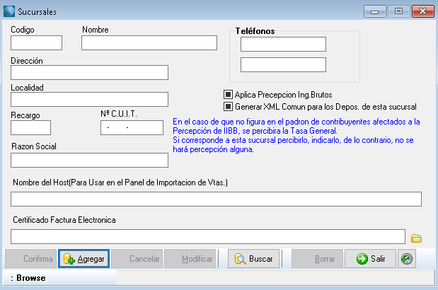
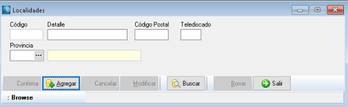
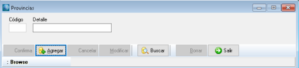
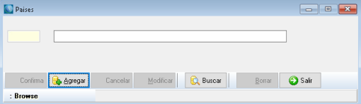
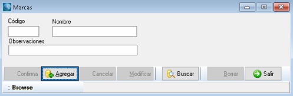
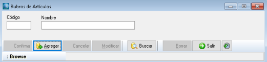
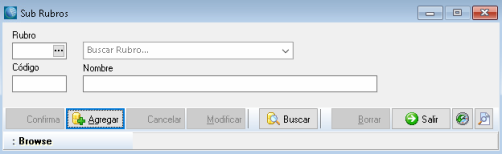
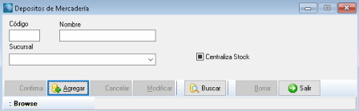
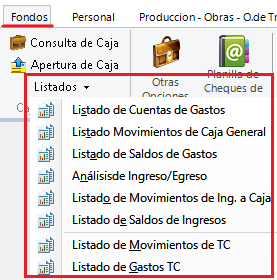
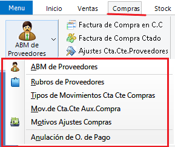

Sistema de Gestión Comercial
Acerca del Producto
Este sistema fue pensando para satisfacer las necesidades correspondientes a la
administración de los diferentes sectores de pequeñas
y medianas empresas, dando una solución óptima e integral que permitirá llevar a cabo las operaciones
necesarias para la fácil administración de ventas,
presupuestos, cobranzas, compras, órdenes de compras, pago a proveedores, control de stock, libro IVA
compras, libro IVA ventas, múltiples cajas,
libro de cheques de terceros, manejo de múltiples cuentas bancarias, administración de personal,
órdenes de producción y órdenes de trabajo (reparaciones / mano de obra).
Sus características principales son su facilidad de uso y la flexibilidad de adaptarse a las necesidades
de prácticamente cualquier empresa de cualquier rubro.
El sistema cuenta con una gran variedad de reportes y gráficos estadísticos útiles para la toma de
decisiones empresariales y la posibilidad de exportación en
diferentes formatos.
Gracias a la posibilidad de configurar diferentes usuarios con diferentes perfiles, el sistema permite
restringir la información solamente a los usuarios pertinentes
dependiendo del cargo y permisos según se haya decidido a nivel gerencial.
- Versión: 8.2.0.38
- Autor: Luis A. Roldán
- Fecha de Creación: 2003
- Última Actualización: 2022
Requerimientos del Sistema
- Sistema Operativo Windows.
- Paquete Redistribuible Microsoft .NET
- Motor de Bases de Datos Firebird o Interbase.
Envíanos tus dudas
Para mantener este manual actualizado, es muy importante la retroalimentación de nuestros usuarios. Envíanos un mail con tu dudas, recomendaciones y/o inquietudes a la siguiente dirección e intentaremos contestar y actualizar el manual lo antes posible.
(PRÓXIMAMENTE)
Soporte Técnico
(PRÓXIMAMENTE)
Primeros Pasos
Sección sobre recomendaciones al usar el sistema por primera vez, configuraciones iniciales, ingreso de parámetros de la empresa y variables generales del sistema.
Ingresar al Sistema
Una vez instalado el sistema, usted podrá acceder desde el ícono en el escritorio. Al abrir la aplicación, se le solicitará nombre de usuario y contraseña.

Ingreselas y presione Aceptar. Así se verá la pantalla principal del Sistema:

Acercando el puntero del mouse al Menú desplegable se mostrará una sección con Acciones Rápidas, cuyas funciones son explicadas mas adelante:

Haciendo click con el mouse en el botón de Menú, se mostrarán las opciones de Usuario:

Login: Cierra la sesión del usuario actual y solicita nuevamente nombre de usuario y contraseña.
Usuario: Función sólo para administradores. Permite administrar los usuarios del sistema. Se explica con
mayor profundidad en la sección Usuarios.
Acerca de: Muestra una ventana con información sobre el sistema.
Cambiar password usuario actual: Muestra la siguiente ventana, donde permite cambiar la constraseña del
usuario que ha iniciado sesión en el sistema.

Videos tutoriales: Abre en el navegador un canal de YouTube con videos tutoriales sobre el uso del sistema.
Salir aplicación: Cierra el sistema.
Haciendo doble click en el fondo de la aplicación, aparecerá un menú para elegir una imagen y cambiarlo:

El menú de acceso rápido permite acceder rápidamente a ciertas características de uso frecuente.

- Factura de Venta al Contado, explicada en Ventas -> Facturas de Venta -> Facturacion de Contado.
- Ticket de Venta, explicado en Ventas -> Facturas de Venta -> Ticket / Factura.
- Consulta de Caja, explicado en Fondos -> Cuentas de Caja y Bancos -> Consulta de Caja.
- Factura de Cuenta Corriente, explicada en Ventas -> Facturas de Venta -> Facturacion en Cuenta Corriente.
- Recibo de Cobranza, explicado en Ventas -> Cobro a Clientes -> Recibo de Cobro.
- Remitos, explicado en Ventas -> Remitos.
- Salir Aplicación, cierra el sistema.
- Videos Tutoriales, abre una pestaña en el navegador con un canal de YouTube con videos tutoriales.
Por último, haciendo click en cualquiera de las solapas se mostrarán todas las herramientas relacionadas a la solapa seleccionada. Por ejemplo, al hacer click sobre la solapa Ventas se desplegará el siguiente menú:

Aspectos Generales
Barra de Herramientas
Los botones de la barra de herramientas varían de acuerdo con las opciones disponibles de cada formulario,
pero básicamente funcionan de la siguiente manera:
Así se verá la barra al abrir un formulario. De este modo, se puede buscar un registro existente o agregar
uno nuevo.

Si se pulsa Agregar, se debe confirmar la operación para guardar los cambios.

Pulsando Borrar y confirmando la operación, se eliminará el registro actual.

Los botones Previo y Siguiente permiten navegar entre los registros, a partir de un registro elegido.
Esto significa que, si no hay un registro abierto, los botones están deshabilitados.

Al pulsar Buscar se pueden presentar diferentes opciones. El caso más simple se presenta en la siguiente
ventana:

Como se ve, se despliega una tabla con los registros existentes, en este caso Monedas, y la posibilidad de
ingresar el texto para facilitar la búsqueda.
La otra posibilidad se presenta cuando los registros tienen varias columnas, entonces se puede especificar
otros filtros extra.
Por ejemplo, en el caso de Comprobantes, podemos buscar por Tipo y otros detalles como Letra y Número, y
también Filtrar por Cliente.

Barra de Estado

En ella se encontrarán los estados de los formularios. Por ejemplo, en este caso, el formulario está en
modo de Consulta (Browse) porque no se modificará ningún dato.
En caso de estar agregando o modificando, estará en modo Agregando Registros. También muestra mensajes del
estado de la información, por ejemplo, en este caso,
muestra que el Comprobante ya fue impreso por lo que no puede ser modificado.
Por lo tanto, las opciones Borrar y Modificar no estarán habilitadas.
Reportes
Se abren en una ventana aparte y, en general, se ven así:

Con la opción Guardar, los reportes se guardan con formato Report File para poder ser abierto,
modificado o simplemente archivado como un documento de Microsoft Word.
Archivos de reporte
Los archivos de reporte se encuentran en la carpeta Reportes dentro de la carptea donde fue instalado el Sistema de Gestión.
Esta dirección debe coincidir con la especificada en la configuración del sistema. Para asegurarnos de ello, nos dirigimos a
Otros -> Opciones Generales

Se nos abrirá la ventana de Opciones Generales. Dentro de la pestaña Opciones de Formato, en la tabla Otras Opciones, Vamos hasta el final donde está especificado el Directorio de Reportes.

Como mencionamos anteriormente, este debe coincidir con la ruta de la carpeta donde están almacenados los archivos de reporte del sistema (.fr3).

Si no coinciden, puede hacer click en las secciones de Directorio de Reportes para editar la ruta e indicar la correcta. Si la ruta no está bien especificada, los reportes saldrán vacíos.
Valores
En los casos de manejo de dinero y valores usados en compras y ventas, el mecanismo utilizado es el
siguiente:

En el ejemplo, estamos viendo un egreso de caja. El manejo de este comprobante está detallado en Fondos ->
Cuentas de Caja y Banco -> Ingresos y Egresos,
ahora sólo nos detendremos a ver cómo ingresar valores.
Primero se ingresa con qué caja se va a trabajar con el boton  debajo de Caja.
Luego, se ingresan los diferentes tipos de pago.
debajo de Caja.
Luego, se ingresan los diferentes tipos de pago.
Dependiendo el tipo de operación que se realice, serán las formas que estarán habilitadas.

Para acceder a las formas de pago debe presionar el Buscador o pulsar Ctrl + Enter o, en caso de que
conozca el código de la forma de pago,
ingrese directamente el código.
Esta modalidad de abrir los buscadores se adopta en todas las pantallas.
Pagos en Efectivo

De todas las operaciones, la más sencilla, sólo debe ingresar el importe en el campo Unidades y confirmar.
En todos los casos, al momento de cargar un movimiento de valores, si no se especifican, por defecto toma
el total en Efectivo
Cheques de Terceros

En caso de venta, la acción correcta sería ingresar el cheque. Por lo tanto, debemos cargar todos los datos del cheque:
Banco, Número de Cheque, Fechas de Emisión, Entrada y Cobro, Unidades de Moneda que percibimos en el cheque y Nombre del Firmante.
Pulsando Enter luego de cada ingreso, el sistema lo llevará en el orden lógico de la carga de los datos.
La información a ingresar pertenece al cheque que el cliente le está entregando en forma de pago.
Presione Confirmar para guardar la operación.
Cheques Propios
Utilizando las chequeras de cheques propios, el sistema permite el ingreso de los datos referidos al
cheque a emitir.

Transferencias Bancarias

Dependiendo si se tratara de una compra o una venta, esta opción ingresará o egresará dinero de sus
cuentas bancarias.
Ingrese, entonces, el número de transferencia, la cuenta involucrada y el importe.
Para seleccionar una cuenta bancaria, presione el botón debajo
de Cta.Bancaria y seleccione la cuenta que será utilizada en esta operación.

En el ejemplo, se trata de una venta, por lo tanto dice “Originado por” y un cliente,
en caso de una compra, la leyenda sería “A favor de” y un proveedor.
Presione Confirmar para guardar la operación.
Tarjetas de Crédito

Este tipo de valor se utiliza en las ventas. El sistema permite cargar pagos con tarjeta de crédito. Para
ello ingrese la tarjeta de crédito,
las cuotas, el titular, las unidades (importe), Nro. de documento del titular y presione Confirma.
Las tarjetas de crédito se cargan en el menú Fondos, submenú datos, opción Tarjetas de Crédito.
Débitos Internos
Para realizar un débito, ingrese el número de débito, la cuenta bancaria y el importe. Presione Confirma
para guardar los cambios.
Datos de la Empresa
Se accede desde el menú Parámetros, botón Datos de la Empresa

Es posible ingresar todos los datos correspondientes a la empresa, como muestra la imagen siguiente:

Buscar logo: El logo de la empresa se inserta desde esta opción. Se abre una ventana donde se elige el
archivo.

Sucursales
Se accede desde el menú Parámetros, botón Sucursales.

Desde esta opción se pueden cargar las diferentes sucursales que componen a la empresa.

Recargo: Esta opción es usada cuando se quiere utilizar un recargo en el costo de la mercadería según la
sucursal.
Los recargos utilizados en este sistema son: por sucursal, por condición de venta y por depósito.
Estos recargos sumados al costo de la mercadería dan el precio final de venta del producto.
Por eso, si el recargo elegido es por sucursal, aquí es donde se pone el porcentaje. Vale aclarar que se
puede trabajar con varios recargos en un mismo producto.
Clonar Comprobantes
Esta opción permite a distintas sucursales compartir comprobantes. Seleccione una sucursal de destino y una de origen a partir del cual se obtendrán los comprobantes. Presione el botón Clonar para guardar la operación.
Comprobantes
Se accede desde el menú Inicio, botón Comprobantes.

En esta pantalla se cargan los comprobantes que se utilizan en la empresa.

- Código: se carga automáticamente y se utiliza para referenciar unívocamente a ese comprobante.
-
Tipo de comprobante: se elige qué va a ser ese comprobante. Estas opciones ya vienen cargados por
defecto en el sistema.

- Clase de comprobante: Se puede poner una sigla que lo represente. Por ejemplo, si se trata de una Factura “A”, se puede representar con FA. Consta solamente de dos dígitos.
- Denominación: Se detalla el nombre del comprobante. Por ejemplo, Factura de Contado “A”.
- Sucursal: Detalla la sucursal a la que pertenece el comprobante.
- Comprobante: Se especifica si es un comprobante de venta o compra.
-
Código de AFIP: Permite seleccionar el código de AFIP que estará relacionado a este comprobante. En caso de tratarse de un comprobante con peso fiscal, se recomienda no dejar en blanco. Para más información, consultar la siguiente web:
Tabla de Comprobantes de AFIP (descarga un documento de excel) - Tipo de numeración: En esta sección se indica qué tipo de numeración va a llevar el comprobante. La primera opción es Numeración Propia, significa que tendremos que configurar una numeración en las secciones Letra, Prefijo y Número, y que este comprobante tendrá numeración independiente. La segunda opción, Toma Número de Otro Comprobante, indica que este comprobante comparte su numeración con otro, que es seleccionado en la sección Enumera desde. Por último, la última opción Sin Numeración simplemente indica que el comprobante no tendrá numeración.
- Letra / Prefijo / Número: Estará habilitado sólo cuando se trate de un comprobante con Numeración Propia. Se detalla como será la numeración.
-
Enumera desde: Sólo habilitado en el caso de que el comprobante tenga seleccionada la opción Toma Número de Otro Comprobante en la sección Tipo de
Numeración. Utilizando el botón podremos elegir a partir de qué comprobante
se heredará la numeración.
-
Archivo del reporte: Permite poner la ruta del reporte asociado a este comprobante.

- Afecta Libro IVA / Afecta Cta. Cte. / Desglosa IVA / Imprimir: Dependiendo de qué clase de comprobante se trate, aquí se puede elegir qué comportamiento va a tener el comprobante. Por ejemplo, si es una Factura de Compra A, todas las opciones serán seleccionadas, pero si se trata de un comprobante de Cobro de Cheque, sólo se seleccionará Imprimir.
- Copias a imprimir: Indica cuantas copias del comprobante serán impresas. En esta opción se puede especificar si se trata de un comprobante por duplicado, triplicado, etc.
Alícuotas de IVA
Se accede desde Parámetros, botón Parámetros de Impuestos, opción Alícuotas de IVA.

Esta pantalla permite el ingreso de las diferentes alícuotas de IVA con las que trabaja la empresa. El
ingreso de la información es similar a los vistos anteriormente.

Tipos de Inscripción IVA
Se accede desde Parámetros, botón Parámetros de Impuestos, opción Inscripcion en IVA.

En esta pantalla se permite la carga de las diferentes inscripciones en IVA y el comportamiento
correspondiente a esa inscripción.

Datos Geográficos
Desde Parámetros, menú Parámetros Geográficos, podemos acceder a distintas ventanas para configurar los
datos geográficos que usará el sistema.

En estas opciones se ingresan los datos que serán utilizados en el resto del sistema cuando sea necesario
referenciar una provincia, zona o localidad.
Presione Agregar, complete los datos y presione Confirma para guardar los cambios. El mecanismo es igual
en los cuatro casos.
Localidades
Se accede desde el menú Parámetros, submenú Datos geográficos, opción Localidades.

Provincias
Se accede desde el menú Parámetros, submenú Datos geográficos, opción Provincias.

Zonas
Se accede desde el menú Parámetros, submenú Datos geográficos, opción Zonas.

Paises
Se accede desde el menú Parámetros, submenú Datos geográficos, opción Países.

Condiciones de Pago
Se accede desde Parámetros, botón Condiciones de Pago.

En esta pantalla se cargan las diferentes condiciones de pago que se asociarán con los clientes a la hora
de ingresarlos al sistema.

Se puede cargar un descuento por cada forma de pago.
Como vimos en Sucursal, también es posible cargarle un recargo, para ello se ingresa en descuento, pero
con número negativo.
En el cuadro de texto "Días", podemos ingresar cuantos días a partir de su emisión tendrá el comprobante antes de vencerse.
Administración de los Alias de Bases de Datos
Se accede desde Parámetros, botón Administración del Alias.

En esta ventana, podremos ingresar y editar los distintos Alias para las bases de datos con los que trabaja el sistema. El Alias es el nombre con el que la base de datos está identificada en el sistema, y el Path es su ubicación, ya sea en el mismo equipo, una red o un sistema remoto.

En caso de trabajar con más de una base de datos, la herramienta permite agregar nuevos alias utilizando el botón
 . Con el botón "Carpeta", se abrirá una ventana con
el explorador de Windows donde podremos buscar el archivo de la base de datos, generalmente ubicado dentro del mismo directorio donde está instalado el sistema dentro
de la carpeta "Tablas IB".
. Con el botón "Carpeta", se abrirá una ventana con
el explorador de Windows donde podremos buscar el archivo de la base de datos, generalmente ubicado dentro del mismo directorio donde está instalado el sistema dentro
de la carpeta "Tablas IB".
Configuración del Equipo Local
Se accede desde Inicio, botón Configuracion Local.

Desde esta opción se configurará el equipo local, o sea, el equipo donde se está trabajando actualmente.
Aquí se detalla en qué sucursal está, con qué depósito trabaja por defecto, cuál es su caja por defecto,
algunos controles de stock y caja, los intervalos de cuenta corriente (por ejemplo, 30 días: mensual, 60
días: bimestral, etc.) y las impresoras.

Tipos de Retenciones
Se accede desde Parámetros, botón Parámetros de Impuestos, opción Tipos de Retenciones.

Aquí se pueden cargar los tipos de retenciones que sufre la empresa. Por ejemplo, retenciones de IVA,
Ingresos Brutos, Ganancias, etc.

Percepciones
Esta sección es sólo para empresas que sean agentes de retención. Se accede desde Parámetros, botón
Parámetros de Impuestos.
Hay dos opciones: Percepciones de IVA y Percepciones de Ingresos Brutos.

Percepciones de IVA
Permite el ingreso de los diferentes porcentajes de IVA.

Mínimo imponible: Especifica el importe a partir del cual se hará la percepción. Este es un valor fijo,
pero puede cambiarse según el caso particular que se
está analizando.
Columna: Fija una posición en el Libro IVA Ventas.
Percepciones de Ingresos Brutos

Mínimo imponible: Especifica el importe a partir del cual se hará la percepción. Este es un valor fijo,
pero puede cambiarse según el caso particular que se
está analizando.
Columna: Fija una posición en el Libro IVA Ventas.
Formularios de Comprobantes
En esta sección se detallan características generales que comparten la mayoría de los formularios del sistema que detallan transacciones, ya sean ventas, compras o transferencias relacionadas a cuentas de caja o banco, y generan comprobantes.

- Encabezado: en esta sección se detallan los datos referidos al comprobante, como la fecha, la sucursal donde será emitido y el tipo y número de comprobante. El resto de los detalles varía dependiendo del tipo de operación que se esté realizando, como por ejemplo el ente a quien está relacionado el comprobante (Cliente, Proveedor, etc).
- Tabla de Detalles: aquí se ingresan los ítems que forman parte de la operación. Para que esta sección esté habilitada, debemos completar los
datos de cabecera. Una vez que comencemos a agregar ítems a la tabla, los datos de cabecera ya no podrán ser modificados, por lo que si ocurrió algún error
en el ingreso de esos datos es recomendable Cancelar y volver a empezar. Para ingresar un ítem, hacemos click en la celda de Código y podremos presionar el botón
, que abrirá una ventana donde podremos buscar el ítem a ingresar. Opcionalmente, podemos ingresar
el código del ítem si es que lo recordamos.
Al hacer click derecho en la tabla de detalles, se abrirá un menú de contexto con opciones adicionales. Estas opciones varían dependiendo del formulario que estemos utilizando. - Pie del Formulario: al igual que el encabezado, esta sección también difiere mucho dependiendo del formulario que se esté trabajando. Aquí se encuentran detalles adicionales de la operación, como el total, los impuestos y más. Algunos formularios, como el que se muestra en la imagen de ejemplo, tienen incluso botones para navegar entre distintas solapas donde se muestran o completan otros datos.
- Barras de Herramientas y Estado: finalmente, en la sección inferior de los formularios se encuentran la barra de herramientas y la barra de estado, explicadas en la sección Aspectos Generales.
Impuestos
Esta sección se encuentra en los formularios de venta y compra, donde se detallan los valores impositivos que forman parte de la operación. Pueden ser:
Sin percepciones
En el caso de que no sea una operación donde se realicen percepciones, la sección Impuestos se verá de la siguiente forma:

El comportamiento de esta solapa depende de las alícuotas de IVA de los artículos y del tipo de inscripción del proveedor. En la sección 1 se detallan los totales sin impuestos:
- Gravado: Los totales de los artículos gravados van aquí.
- Exento: Los totales de los artículos exentos van aquí.
- Monotributo: Si el proveedor es monotributista, el total irá aquí.
- Importe Excluido: Aquí irán los totales de aquellos artículos que fueron cargados con Impuestos Internos.
- Descuento: En caso de que la operación tenga alguna clase de bonificación, puede detallarse aquí. Los nuevos valores serán calculados y mostrados en la sección 3.
En la sección 2 se detallan el cálculo de los impuestos. En el ejemplo los artículos ingresados tienen un IVA del 21%, por lo tanto se muestra la tabla IVA con la alícuota 21 y el porcentaje del impuesto. El cálculo del IVA es sobre el total con el descuento, mostrado en la sección 3. En la sección 4 se muestra el total de la operación, o sea, el total de la sección 3 más la sección 2.
Con percepciones
Si es posible que se realicen percepciones en la operación, la sección Impuestos se verá así:

En el ejemplo se detalla la sección Impuestos en una Factura de Compra en Cuenta Corriente. Como el proveedor fue declarado como Agente de Retención de IVA y de IIBB (ver Compras -> Proveedores), se detallan los porcentajes en las tablas Percepciones de IVA y Percepciones IIBB. El cálculo de los impuestos fue tomado a partir del total Gravado de la sección 3. Por lo tanto, la sección 4 muestra el total a pagar, conformado por el total de la sección 3 y los totales de impuestos de la sección 2.
Preguntas Frecuentes
En esta sección se detallan las preguntas más frecuentes de nuestros usuarios, algunas con videos en nuestro canal de YouTube donde explicamos paso a paso como resolver sus dudas respecto al uso del Sistema de Gestión.
Video tutorial aquí. Debajo de la aclaración también hay una explicación paso a paso.
Aclaración: en el video tutorial falta un paso que se debe realizar antes de poder usar una caja, que es el de asignar la misma a los usuarios responsables de operarla. Para esto, seguiremos los siguientes pasos:
- Nos dirijimos a la sección Otros, hacemos click en Opc de Usuarios y click
nuevamente en Asignar Caja a Usuario.

- Se nos abrirá la siguiente ventana, donde podremos comenzar a asignar cajas a los usuarios
que esten creados en el sistema. En este ejemplo,
asignaremos la Caja Ejemplo al usuario Master. Para ello, seleccionamos la caja que queremos
agregar haciendo click con el botón secundario sobre ella,
de forma que esta quede resaltada. Luego, arrastramos con el botón primario del mouse
sobre el usuario al que se la queremos asignar, en este caso
master, veremos que la caja es añadida debajo de su nombre. Finalmente, hacemos click
en el botón Aplicar Cambios para guardar.

-
También podremos asignar una caja por defecto al usuario, para que al realizar cualquier
operación el usuario automáticamente seleccione esta caja.
Para ello, hacemos click con el botón primario en la caja para seleccionarla, luego click
derecho y finalmente click en "Hacer Caja por Defecto".

¡Cuidado! un usuario que NO tenga una caja asignada, como en la imagen es el caso del usuario matilupo, no podrá realizar ciertas operaciones de venta y manejo de fondos. Si tiene algún error al intentar realizar ventas, o si la caja que busca no le aparece, puede que se deba a que su usuario no tiene ninguna caja asignada.
Pasos para crear y abrir una caja
- Vamos a Fondos y hacemos click en Cuentas de Caja y Bancos.

-
Hacemos click en Agregar, se nos autogenerará un Código que podemos cambiar si así
deseamos. Debajo, podremos darle un Nombre a la cuenta.
En el desplegable Tipo de Cta./Caja podemos elegir si se tratará de una cuenta de
Caja o de Banco. Si elegimos Banco, debajo se habilitará el botón
donde podremos
elegir entre los bancos ingresados en el sistema (ver Fondos -> Bancos).
También podremos ingresar el Número de cuenta bancaria, el Número de CUIT del Banco y la
Razón Social. Luego de ingresar los datos, hacemos click en Confirma
y se guardarán los datos de la nueva Cuenta.

- Recomendamos realizar los pasos descritos en la Aclaración, donde asignamos la nueva Caja a los usuarios que tendrán permiso para operarla.
-
Nos dirigimos nuevamente a Fondos y hacemos click en Apertura de Cajas.

-
Una vez abierta la ventana, hacemos click en Agregar. Presionamos el botón para
seleccionar qué cuenta abriremos. Opcionalmente, podemos cambiar la Fecha o agregar
Observaciones de ser necesario. Finalmente, hacemos click en Confirmar y
la caja ya estará abierta y disponible para su uso.

Video tutorial aquí. Explicación paso a paso próximamente.
Video tutorial aquí.
También puede dirijirse a la sección Ventas -> Facturas de Venta.
Video tutorial aquí.
También puede dirijirse a la sección Ventas -> Facturas de Venta -> Facturación de Contado.
Video tutorial aquí.
Debemos tener en cuenta que, para poder realizar una corrección de este tipo, debemos ser usuario administrador y
la caja no debe haberse cerrado desde la vez que hicimos la operación a correjir.
Video tutorial aquí.
También puede dirijirse a la sección Ventas -> Políticas de Precio -> Creación de Listas de Precios.
Video tutorial aquí.
También puede dirijirse a la sección Ventas -> Políticas de Precio -> Creación de Listas de Precios.
Video tutorial aquí.
También puede dirijirse a la sección Ventas -> Políticas de Precio -> Creación de Listas de Precios, en la sección
"Herramientas adicionales" -> "Clonar Lista de Precios".
Stock
Al hacer click en la solapa Stock, se abrirá la siguiente sección con las herramientas relacionadas a
los artículos de la empresa y su control de stock.

Cargar Primeros Datos

Dentro del submenú Otros Datos, se encuentran las opciones necesarias para cargar esta información que
será utilizada posteriormente en el ingreso de los artículos,
estas son:
Marcas

Rubros

Subrubros

Depósitos

Unidades de Stock
A diferencia de las otras opciones, se accede desde Parámetros, botón Unidades de Stock.

Se nos abrirá la siguiente ventana, donde podremos configurar los distintos tipos de unidades de stock que
utilizará el sistema.


Artículos
Se accede desde el menú Stock, opción Artículos.

Las solapas principales para la definición de los artículos son:
Datos Principales
- Código: El sistema sugiere uno, conformado según los códigos del rubro y subrubro. Si la empresa tiene su propia codificación, asegúrese que esté desactivada la opción Controla Código de Stock en Configuración del equipo local del menú Parámetros, ver Primeros Pasos -> Configuracion Local.
- Detalle: Nombre del producto.
- Código de Barras: Opcionalmente, se ingresa el número correspondiente al código de barras, directamente con el lector de código de barras.
- Marca / Rubro / Subrubro / Unidad de Venta: Definidos en el punto anterior, son las características del artículo.
- Controla Stock: Significa que el ingreso o egreso de este producto se verá reflejado en los saldos de Stock.
- Actualiza costo con la compra: Si esta opción está activada, cada vez que se ejecute una compra, se actualizará el costo de la misma con el monto de la compra. De no ser así, el costo será el mismo desde su carga inicial o desde alguna eventual modificación manual.
- Código de proveedor: El código del artículo según el proveedor.
- Código de reemplazo: Puede ingresarse el código de algún artículo que pueda servir como reemplazo de éste.
- Tabla: Se detallan los depósitos donde se van a almacenar los artículos. Volviendo a lo explicado en Sucursales, aquí también se puede cargar un recargo por depósito, desde la columna % Recargo. Se detallan además el stock inicial, o sea, de cuánto fue la primer compra. En el stock medio se ingresa el punto de pedido o stock crítico. El stock mínimo, que es el mínimo que puede haber en stock de ese artículo, llegando a ese valor se necesita reponer la mercadería urgentemente. El stock actual, que es el stock que hay en este momento.
Costos/Impuestos

- Modo de Gravamen: Se especifica si está gravado, exento o con impuestos internos.
- Costo no Gravado: Si se tratara de un artículo no gravado, aquí se especifica su costo.
- Precio no Gravado: Si se tratara de un artículo no gravado, aquí se fija su precio.
- Tasa: Aquí se especifica la tasa de IVA que corresponde al artículo.
- Costo Gravado: Si se trata de un artículo gravado, aquí se especifica su costo.
- Precio Gravado: Si se trata de un artículo gravado, aquí se especifica su precio.
- Sobre Tasa: Esta Sobre Tasa se utiliza cuando el cliente es Responsable No Inscripto. En este caso, si
el artículo es gravado,
esta Sobre Tasa se suma al precio del artículo más la tasa correspondiente. Este comportamiento está
configurado en el menú Parámetros -> Inscripciones en IVA.

- Costo Total: Calculo del costo total.
- F. Precio Total: Calculo de precio total.
- Tabla: Lista todos los proveedores de ese artículo.
Movimientos de Stock
- Tabla: Detalla los diferentes movimientos en el stock de ese artículo según el depósito elegido en el período seleccionado. Para listarlos, pulsar Ver Movimientos o F3.
- Tipo de Operación: Filtra la tabla dependiendo de qué clase sea la operación. Si la tabla no se actualiza automáticamente según la operación elegida, presione Ver Movimientos nuevamente.
Operaciones de Stock

Consulta

Seleccionando el depósito (Paso 1), se detallarán todos los productos existentes en la tabla principal.
Este resultado se puede filtrar por marca,
rubro y subrubro (Paso 2). Seleccionado un determinado producto en la tabla principal (Paso 3), se detalla
en la tabla Existencia Actual el stock actual del
artículo de todos los depósitos.
Con el botón Buscar se puede buscar un producto de la lista de artículos resultante de las búsquedas
anteriores.
Existencias

Detalla por depósito los costos de los artículos. Es posible filtrar la información por marca, rubro y
subrubro, y ordenarla haciendo click sobre el nombre
de las columnas.
Presionando Imprimir, se verá la siguiente pantalla:
Las columnas y el detalle de la información estarán ligados a las opciones: Muestra con stock cero, Imprime stock valorizado, Ver punto de pedido. La opción Imprime stock valorizado genera el reporte con el precio de los artículos y la opción Ver punto de pedido toma el stock medio que fue cargado en Artículos. Para ver más información sobre los reportes consulte la sección Primeros Pasos -> Reportes.
Transferencias
Desde esta opción es posible transferir artículos de un depósito a otro. Esta operación generará un comprobante que se podrá imprimir desde la opción Imprimir.

Para llevarla a cabo se deben seguir los siguientes pasos:
- Se selecciona una fecha, por defecto el sistema pondrá la fecha actual, pero pulsando sobre la pestaña, se abre un calendario donde se puede seleccionar la fecha deseada
- Se selecciona el depósito haciendo click sobre el buscador o presionando Ctrl + Enter.
- Se selecciona el tipo de comprobante, por defecto, es un comprobante de Transferencia, pero pueden usarse comprobantes personalizados definidos anteriormente en Comprobantes (ver Primeros Pasos -> Comprobantes). La numeración se pondrá automáticamente.
- Se seleccionan los depósitos Origen y Destino de la misma manera.
- En el Detalle, se seleccionan los artículos a transferir, cantidad y precio. El precio por defecto es el costo actual del artículo, pero puede modificarse.
- En observaciones se pueden describir detalles de la operación o, simplemente, la información que se considere necesaria para la transferencia.
- Con Confirma, acepta y guarda la operación.
Ajustes de Stock
Desde esta opción se puede ajustar el stock existente de un determinado depósito. En el detalle se agrega el artículo a ajustar, el sistema muestra el stock actual y en Cantidad se ingresa el ajuste deseado. Si este valor es un número positivo, se agregará al stock; de ser número negativo, se restará.
Toma de Inventario
Se accede desde el submenú Otras Opciones, botón Toma de Inventario.

Se abrirá la siguiente ventana, donde podremos registrar una lectura de inventario. Al presionar Agregar, podremos comenzar la operación. En el encabezado, el Número es asignado automáticamente, por lo que sólo debemos especificar la Fecha y el Depósito donde se realiza el inventario.

Existen varias formas de agregar ítems a la tabla de detalles. La primera y más simple es ingresando manualmente los artículos, haciendo click en la celda
de Código e ingresando el código del artículo o buscandolo con el botón .
Cuando comencemos a agregar artículos, ya no podremos modificar el Depósito donde se realiza la operación.
Haciendo doble click sobre el artículo ingresado, se abrirá su Planilla de Stock como vimos en Artículos.
La columna Stk. Actual indica las existencias actuales del artículo ingresado. La columna Stock indica la actualización, es decir los
nuevos artículos ingresados al inventario. La columna Stk. Dif indica las unidades de stock de diferencia entre el stock actual y el stock actualizado.
Luego está el Costo del artículo (fijado en su Planilla de Stock, sección Costos/Impuestos), un indicador sobre si el artículo controla stock o no y
finalmente una casilla con el Motivo del ajuste (opcional).

Otra forma de ingresar los datos es haciendo click en el botón Toma Inventario Actual. Esto ingresará el inventario actual de todos los artículos en
el depósito indicado de forma automática.
Finalmente, también podemos hacer click en el botón Leer Borrador que nos permitirá levantar los datos de inventario que hayamos
escaneado con un colector de datos y generar la tabla de detalles automáticamente.
Presionando el botón Confirma guardamos la operación.
Desde esta misma ventana, podremos realizar un Ajuste de Stock sobre tomas de inventario confirmadas haciendo click en el botón Hacer Ajuste.
Se abrirá una ventana como la vista en la sección Ajustes que vimos anteriormente. Las unidades de stock en la columna Stk. Dif serán añadidas
automáticamente al ajuste, como vemos en la siguiente imagen.

Tener en cuenta que si el valor en Stk. Dif es negativo, también lo será en el Ajuste.
Precios
Las opciones de ajustes de precios de los artículos se encuentran en el submenú Actualización
Precios.

Actualización de Precios General
Mediante esta operación se pueden actualizar todos los precios de los artículos.

Se pueden seleccionar por marcas, rubros o subrubros. Al activar la casilla, se habilita el buscador para
poder ingresarlos.
Presione Consultar para desplegar el listado de los artículos según la selección elegida.
En el apartado de Columnas Visibles están las diferentes opciones que podemos actualizar. Por cada una de
ellas que seleccionemos,
se agregarán dos columnas a la tabla, una con el valor actual y la otra con el nuevo valor que surge de
aplicar la Variación en %.
Para ello, active la casilla que corresponda, ingrese el porcentaje, que puede ser positivo o negativo
dependiendo si quiere aumentar o disminuir el valor,
y presione Calcular. Presione Confirma para guardar los cambios.
Si se desea cambiar el margen de ganancia, al activar esta casilla, se deberá ingresar además el depósito
al que corresponde.
Actualizacion de Precios Manual
Mediante esta opción se pueden actualizar los precios de los artículos, pero manualmente. Para ello, se
listan los artículos
(que también se puede filtrar por marcas, rubros y subrubros) y en la columna Fijación Precio Total Nuevo
se ingresa el nuevo precio.
El botón Buscar Todos trae todos los artículos o sea, todas las marcas, todos los rubros y todos los
subrubros.
Una vez ingresado todos los precios que se querían cambiar, presione Aplica Cambios para guardar los
nuevos datos.

Lista de Precios Personalizada
Se encuentra en el submenú Stock Listados, opción Lista de Precios Personalizada.

Esta opción permite generar una lista de precios que se adapte a las necesidades del momento.
La tabla superior muestra todos los subrubros del depósito elegido y la tabla inferior el detalle de los
artículos que lo componen y su costo.

Antes de generar la lista de precios, debemos seleccionar un esquema utilizando el menú desplegable que se encuentra en la esquina superior izquierda de la ventana. Si no tenemos esquemas cargados, o si queremos crear uno nuevo, presionamos el botón "Esquemas" y se abrirá la siguiente ventana:


Para generar una lista de precios personalizada se deben seguir los siguiente pasos:
- Elegir el depósito y presionar Iniciar.
- Se puede modificar el orden de las columnas, haciendo click sobre el nombre de las columnasy arrastrándolas.
- Es posible filtrar por marcas utilizando el Filtro en la parte superior. Aparecerá un menú de contexto donde podremos seleccionar qué marcas estarán en la lista de precios. También podemos indicar qué artículos individuales serán impresos tildando o destildando la columna Imp. en la fila correspondiente.
- Seleccionamos las opciones de impresión. Imprime Precios con IVA indica si los precios en la lista irán con IVA o no al imprimirse. Esto también estará indicado en la hoja de impresión. También podemos indicar si se imprimirán o no las Marcas, los Rubros y Subrubros.
- Presiona Imprimir para generar la lista.
Rentabilidad
Se accede desde Stock, submenú Stock Listados, opción Rentabilidad

Esta pantalla muestra los artículos vendidos en un período determinado, comparando precios de compra y venta, dando un porcentaje de la rentabilidad obtenida. En el cuadro % Promedio se puede ver el porcentaje promedio de ganancia de todas las operaciones realizadas.
Los pasos a seguir son los siguientes:
- Seleccione un período.
- Presione Buscar. En la tabla debajo se detallarán los artículos vendidos en ese período.
- Posiciónese sobre un artículo y presione el botón + (también puede hacer doble click sobre el
artículo).
Aparecerá una nueva subtabla donde se detallarán todos los comprobantes de las ventas realizadas y los
precios de costos y venta y el porcentaje de ganancia.

- Presione Imprimir para listar todos los artículos vendidos.
Artículos Exentos Vendidos
Se accede desde el submenú Stock Listados, opción Informe de Artículos Exentos Vendidos.

Lista todos los artículos exentos vendidos en un período determinado. Seleccione el período y presione Buscar. Con Imprimir generará el reporte.

Listado de Rubros y Subrubros de Stock
Se encuentra en el submenú Stock Listados, opción Listado de Rubros y Subrubros de Stock

Muestra un listado de todos los rubros y subrubros de stock. Presione Consultar para iniciar el listado, puede tomar un tiempo. Este listado puede imprimirse, para ello, presione Imprimir.

Fondos
Haciendo click en la sección Fondos, se abrirá la siguiente solapa con las herramientas relacionadas al manejo de cuentas de fondos, cajas, bancos, transferencias y gastos.

A continuación se describen las funcionalidades de estas herramientas.
Datos Iniciales
Es necesario el ingreso de estos datos, ya que serán usados en la mayoría de las operaciones. Estos se acceden desde el submenú Otras Opciones:

Monedas
Cargaremos aquí todas las diferentes monedas con las que trabajaremos. Presione Agregar, ingrese la moneda y Confirme.

Tarjetas de Crédito
Registra todas las tarjetas de crédito que maneja la empresa. El ingreso de éstas es de similar manera que las monedas.

También disponemos de otro menú para ingresar tarjetas de crédito de compra:

Formas de Pago
Mediante esta opción se pueden cargar las diferentes formas de pago. Éstas pueden ser: Efectivo, cheque de tercero, cheque propio, tarjeta de crédito, transferencia bancaria, entre otras.

Rubro de Gastos
Ingrese desde esta opción todos los rubros de gastos, que luego especializará en las cuentas de gastos. Estos rubros pueden ser: Alquileres, seguros, sueldos, etc.

Cuentas de Gastos
Especifique desde aquí todos los gastos que sufrirán los fondos. Se agruparán según los rubros definidos anteriormente.

Cuentas de Caja y Banco

En esta sección describimos las herramientas utilizadas para la creación y manipulación de cuentas de Caja.
Creación de Cuentas
Con esta herramienta podemos crear nuevas cuentas de Caja y Banco. El uso de las cuentas de Banco es explicado en la sección Bancos.
- Código: Este código lo provee el sistema, con él se referencia a la cuenta.
- Tipo: Puede ser caja o banco. De ser banco, se habilitarán las celdas Banco y Nro de Cuenta.
- Nombre: Con el que se distinguirá a la cuenta.
- Banco: Nombre del banco, éste es cargado desde el menú Bancos, ver Entidades Bancarias en la sección Bancos -> Datos Iniciales.
- Nro de cuenta: Número de la cuenta bancaria.
Asignación a Usuarios
Para poder utilizar las cuentas creadas en la sección anterior, primero debemos asignarlas a los usuarios que serán responsables de su uso. Nos dirijimos a la sección Otros, botón Opc de Usuarios, opción Asigna Caja a Usuario.
En la siguiente ventana, podremos asignar las cuentas de caja (panel derecho) a los usuarios (panel izquierdo).
- Hacemos click derecho con el mouse en la caja que queremos asignar.
- La arrastramos manteniendo el click izquierdo al usuario al que se la queremos asignar.
- Hacemos click en Aplicar Cambios para guardar.
Advertencia: un usuario que no tenga cajas asignadas, como es el caso de matilupo en la imagen ejemplo, no podrá realizar ciertas operaciones. Si al usar el sistema no aparecen cajas para usar, consulte con el administrador si su usuario no tiene cajas asignadas.
Debajo se muestra como asignar una cajas por defecto, para que cuando un usuario realice una operación de caja esta sea la primera que le aparezca disponible. Hacemos click sobre el usuario, de forma que se desplieguen sus cajas disponibles. Luego, hacemos click izquierdo sobre alguna de las cajas para resaltarla y click derecho para abrir el menú de contexto. Finalmente, hacemos click en "Hacer caja por defecto", como se muestra en la imagen. Cada usuario puede tener sólo una caja por defecto.
Apertura de Caja
Una vez definida la caja en Cuentas de Caja y Bancos, y esta asignada a un usuario en Asignación a Usuarios, ésta debe abrirse para poder empezar a trabajar. Se accede desde el submenú Caja, opción Apertura de Caja.
Presione Agregar y elija la caja. La fecha por defecto se pondrá la actual, pero puede cambiarla. Puede agregar también Observaciones y los saldos iniciales en los valores que corresponde. Una vez abierta esta caja, no se puede volver a ejecutar esta operación. Ahora, esta caja estará en el listado de cajas abiertas. Presione Confirmar para guardar los cambios.
Ingresos y Egresos de Caja

Ingresos de Caja
Independientemente de los movimientos que generan la emisión de comprobantes y demás operaciones que hemos visto en Compras, Ventas y lo que veremos después en Bancos y Personal, se pueden cargar manualmente diferentes ingresos y egresos en la caja. Para ingresar valores a la caja presione Agregar y complete los siguientes datos:

- Fecha: El sistema ingresará la fecha actual por defecto.
- Sucursal: El sistema ingresará la sucursal desde donde se está trabajando.
- Tipo de comprobante: El sistema ingresará el tipo de comprobante Ingreso de Caja.
- Nro de comprobante: Con letra X, se ingresará el número correspondiente
- Detalle: Aquí puede ingresar el detalle del ingreso.
- Tabla Gastos: Ingrese fecha, rubro, cuenta, detalle e importe por cada gasto. El rubro y cuenta fueron definidos anteriormente. Presione el botón Buscador o Ctrl. + Enter, o, en caso de saberlo, ingrese el código correspondiente.
- Caja: Se seleccionará la caja que maneja esta sucursal, este dato no puede ser cambiado. Esta caja se configuró en el menú Parámetros, opción Configuración local, ver Primeros Pasos -> Configuracion Local.
- Detalle de valores: Aquí se detallan los valores que componen el saldo.
El mecanismo de ingreso de los mismos está detallado en Valores,
ver Primeros Pasos -> Valores.
Egresos de Caja
Para cargar egresos de la caja, presione Agregar y complete los siguiente datos:
- Fecha: El sistema ingresará la fecha actual por defecto.
- Sucursal: El sistema ingresará la sucursal desde donde se está trabajando.
- Tipo de comprobante: El sistema ingresará el tipo de comprobante Ingreso de Caja.
- Nro de comprobante: Con letra X, se ingresará el número correspondiente
- Detalle: Aquí puede ingresar el detalle del ingreso.
- Tabla Gastos: Ingrese fecha, rubro, cuenta, detalle e importe por cada gasto. El rubro y cuenta fueron definidos anteriormente. Presione el botón Buscador o Ctrl. + Enter, o, en caso de saberlo, ingrese el código correspondiente.
- Caja: Se seleccionará la caja que maneja esta sucursal, este dato no puede ser cambiado. Esta caja se configuró en el menú Parámetros, opción Configuración local, ver Primeros Pasos -> Configuracion Local.
- Detalle de valores: Aquí se detallan los valores que componen el saldo.
El mecanismo de ingreso de los mismos está detallado en Valores,
ver Primeros Pasos -> Valores.
Consulta de Caja
Esta opción detalla todos los movimientos, las diferentes formas de pago, las retenciones y depósitos de todas las cajas. Veamos en detalle cada una de las solapas que componen esta consulta.
Movimientos:
Esta es la sección principal donde es posible buscar, administrar y cerrar las cajas.

Por defecto, el sistema mostrará los datos de la caja que usa la sucursal desde donde se está trabajando, pero es posible cambiar de caja como veremos más adelante. A continuación, describiremos las tres secciones en la que está dividida esta solapa:
Cabecera:

En esta sección se encuentra el nombre y código de la caja seleccionada. También podemos observar el estado de la caja (Abierta o Cerrada), las fechas de apertura y cierre y una tabla con los saldos iniciales en su apertura. En el medio, hay dos calendarios "Desde" y “Hasta” con los que podemos habilitar un filtro de movimientos tildando la opción "Filtrar fechas", esto hará que sólo los movimientos dentro de este período se muestren en la tabla debajo.
Tabla de Movimientos:

En esta sección, se muestran todos los movimientos realizados con esta caja. En la primera solapa, como vemos en la imagen, se muestran los ingresos a la caja, es decir todos aquellos comprobantes que generaron un movimiento positivo. En la caja de texto a la derecha, se muestra el total de ingresos. Podemos tildar la opción "Filtrar sólo comprobantes de venta y compra" para que no se muestren otros comprobantes como ingresos de caja y transferencias.

En la siguiente pestaña, se muestran los egresos de caja, es decir los comprobantes y movimientos que generaron saldos negativos. Es posible ingresar manualmente estos egresos presionando el botón "Ingresar gastos". Se abrirá una nueva ventana donde seleccionaremos el comprobante de gasto, la cuenta de gasto e indicaremos el importe. Cabe aclarar que esta operación sólo podrá realizarse en una caja abierta.

Al presionar OK, el gasto ingresado aparecerá en la tabla de egresos y se sumará al total.

Aquí se muestran las facturas anuladas.

En esta pestaña, podemos listar los artículos vendidos en las ventas realizadas en esta caja. Para generar el listado, presionamos el botón "Listar Art". En el recuadro de texto a la derecha, podemos observar el total de ingresos a partir de estos artículos.
Pie:

En el pie de la ventana encontramos los saldos finales de la caja, además de herramientas varias. Con el botón de Buscar Cajas Abiertas, se abre una nueva ventana donde podemos visualizar las cajas acutalmente abiertas. Haciendo click en una de estas cajas y presionando el botón OK, cambiamos la caja actualmente seleccionada.

A la izquierda de este botón se encuentra la opción de buscar cierres de caja. Funciona similar al buscador anterior, con la única diferencia de que debemos seleccionar la caja en el menú desplegable y luego el período de cierre que queremos consultar. Presionando el botón OK, cambiamos la caja seleccionada al cierre de caja resaltado. Veremos que la etiqueta del estado de caja en la cabecera dirá "Cerrada" y estará indicada la fecha de cierre, además de que no podremos realizar cambios en los movimientos.

El botón Cerrar Caja nos permitirá cerrar la caja actualmente seleccionada (si está abierta). Al hacer click en este botón, aparecerá un cartel emergente que nos pedirá confimación de esta operación. Sólo debemos hacer click en aceptar si estamos completamente seguros de que los movimientos de la caja son correctos, ya que luego de cerrarla no podremos modificarlos. Al aceptar cerrar la caja, nos aparecerá otro cartel preguntando si queremos realizar una transferencia de los saldos finales de esta caja a otra, podemos aceptar o no según sea necesario.
El botón Ver Resumen abrirá una nueva ventana donde podremos observar un resumen de los movimientos de la caja.

Finalmente, en la parte derecha del pie de la ventana se encuentran dos botones: uno para cargar lotes de tarjetas de crédito y otro para realizar una transferencia de efectivo desde esta caja a otra. También, podemos observar una caja de texto con el saldo final de la caja entre ingresos y egresos. Si es positivo, significa que la caja tuvo más ingresos que egresos, y el saldo se mostrará de color azul. Caso contrario, el saldo será negativo y se mostrará de color rojo.
Cheques de Terceros:

Esta solapa muestra todos los cheques de terceros que han sido ingresados a la caja y aquellos ingresados que han sido entregado como parte de pago por parte de la empresa o han sido cobrados o depositados. Estos movimientos han sido cargados desde otras operaciones.
Valores:

Detalla todos los comprobantes y todos los valores ingresados. Se puede filtrar esta tabla eligiendo un valor en particular desde el menú desplegable Filtro de Forma de Pago.
Cheques emitidos:
Lista todos los cheques emitidos por la empresa desde las chequeras configuradas en el menú Bancos, opción
Chequeras, ver sección Bancos -> Chequeras.

Transferencias:
Esta solapa detalla las transferencias hechas, las recibidas y los débitos bancarios por pago de facturas.

Retenciones: Detalla las diferentes retenciones en que se han llevado a cabo en las ventas y en las compras. Estas retenciones fueron cargadas en los Recibos de Cobro, en la solapa Retenciones, o en las Órdenes de Pago, en la solapa retenciones IIBB. Para más información diríjase a las secciones Ventas -> Cobro a Clientes y Compras -> Pagos a Proveedores respectivamente.

Depósitos: Detalla los depósitos en efectivo o cheque realizados en las diferentes cuentas bancarias de la empresa.

Movimientos en Efectivo: Esta solapa muestra el movimiento de efectivo efectuado en las diferentes operaciones.

Transferencias entre Cajas
Es posible transferir efectivo o cheques de una caja a otra. Esta operación se realiza mediante estas dos opciones:
Efectivo
Mediante la opción Transferencia de Efectivo se puede transferir efectivo de una caja origen a una caja destino. Presione Agregar y complete los siguientes:

- Fecha: El sistema ingresará la fecha actual.
- Sucursal: El sistema ingresará la sucursal desde la que se está operando.
- Tipo de Comprobante: El sistema ingresará el comprobante Transferencia en Efectivo.
- Nro de Comprobante: El sistema ingresará el número correspondiente.
- Caja Origen: Por defecto será la caja con la que esta sucursal trabaja. Presione Traer Saldos para completar la tabla Disponible.
- Caja Destino: Elija aquí la caja que recibirá la transferencia.
- Disponible: En la columna A Transferir ingrese el importe que se transferirá a la caja Destino.
Cheques
De la misma manera se pueden transferir cheques de una caja a otra. Desde la opción Transferencia de cheques en cartera, presione Agregar y complete los siguientes campos:

- Fecha: El sistema ingresará la fecha actual.
- Sucursal: El sistema ingresará la sucursal desde la que se está trabajando.
- Tipo de comprobante: El sistema ingresará el tipo Transferencia de Cheques.
- Caja Origen: Por defecto será la caja con que trabaja la sucursal, pero puede cambiarse.
Presione Listar Cheques para actualizar la tabla Cheques Disponibles. - Caja Destino: Elija la caja destino.
- Cheques Disponibles: Habilita la casilla de verificación de la columna Transferir en cada cheque que desee transferir. Puede usar también los botones Seleccionar todo y Quitar selección.
Cobro de Cheques a Caja
Se encuentra en la sección Fondos, botón Cobro de Cheques a Caja

Mediante esta opción se registran los cobros de cheques. Presione Agregar y complete los siguientes datos:

- Fecha: El sistema ingresará la fecha actual.
- Sucursal: El sistema ingresará la sucursal desde la que se está trabajando.
- Tipo de Comprobante: Este será Cobro de cheque.
- Detalle: Ingrese aquí el detalle de la operación.
- Cheques de: Elija si es un cheque propio o de terceros. Según esta selección se mostrará la solapa de cheques de tercero o la de cheques propios. En el caso del ejemplo, esta mostrando la de cheques de terceros.
- Caja: Por defecto, será la caja con la que se está trabajando desde esa sucursal.
Presione Confirma para guardar los cambios.
Reemplazo de Cheques
Se accede desde la sección Fondos, botón Reemplazo de Cheques

Mediante esta opción se registran los reemplazos de los cheques emitidos. Es importante tener en cuenta que el cheque luego puede ser anulado desde
Anular cheque, pero nunca antes.
Para reemplazar un cheque presione Agregar y complete la siguiente información:

Ingrese el Banco al que corresponde el cheque, presione Buscar Cheque. Se listarán todos los cheques emitidos, elija uno y sus datos se completarán en el apartado siguiente.

Las observaciones se completan automáticamente, pero puede ser reemplazada en caso que se necesite.
El cheque puede ser reemplazado por efectivo, por un cheque de terceros, la emisión de un nuevo cheque, transferencias o débitos.
La selección de la forma de pago y demás fue detallada en Valores (ver Primeros Pasos -> Aspectos Generales).
Presione Confirma para guardar los cambios.
Planilla de Cheques de Terceros
Se encuentra en la sección Fondos, botón Planilla de Terceros.

Esta opción lista todos los cheques de terceros que hay en cartera. En este listado se pueden seleccionar los cheques que cumplan ciertas condiciones e, incluso, filtrarlos por selección.

Haciendo doble click sobre el cheque (o click derecho -> Ver por donde ingresó) se abrirá, según corresponda, la factura de venta contado donde ingresó o el recibo de cobro si fue por una venta en cuenta corriente. En el recuadro de abajo se muestra el detalle de cada cheque que se selecciona en la tabla. Del apartado Seleccionar, elija el estado del cheque que desea listar. Para una selección más exacta, puede especificar Rango de Fechas o Buscar por Número.
En la pestaña Agrupado, puede utilizar filtros más avanzados para realziar una búsqueda más específica, e incluso exportar a un archivo Excel:

Para terminar, cualquiera haya sido la selección elegida, se podrá imprimir presionando Imprimir.
Gastos y Listados
Aquí se describen herramientas varias de listado dentro del submenú Listados

Listado de Cuentas de Gastos
Esta opción lista todas las cuentas de gastos que fueron cargadas en Cuentas de Gastos, ver Fondos ->
Datos Iniciales -> Cuentas de Gastos.
Estas cuentas están agrupadas por rubros.

Listado de Saldo de Gastos
Esta opción lista todas las cuentas con los importes que se han acumulado en el período que se estableció.
Para ello seleccione un período y presione Buscar. Este listado puede imprimirse, para ello presione
Imprimir.
Si esta activada la casilla de verificación Imprimir con detalles, se detallarán cada uno de los
movimientos de las cuentas.
En cambio, si no está activada, sólo se mostrará el saldo de cada cuenta, sin movimientos.
Puede filtrar el listado por un rubro y cuentas en especial. Para ello, elíjalos desde las pestañas de
Rubro de Gastos y Cuentas de Gasto.
Presione Buscar para actualizar el listado.

Listados de Cheques de Terceros
Se encuentran en esta sección dentro del submenú Listados:

Cheques Depositados antes de Cobro:

En esta ventana se muestran aquellos cheques de terceros depositados antes de cobro. Seleccione una Fecha
de Cobro a partir de la cual se buscarán los cheques, los Días de Clearing
y un período de tiempo entre el cual los cheques fueron ingresados al sistema. Presione Buscar para
iniciar el listado.
Listado de Cheques de Terceros Recibidos:

Aquí se listan los cheques de terceros recibidos e ingresados al sistema. Ingrese un período de tiempo y
presione Buscar para iniciar el listado.
Listado de Cheques por Comprobante de Ingreso:

Por último, en esta ventana se generan sublistados donde los cheques recibidos están agrupados por comprobante de ingreso. Seleccione un período de tiempo y presione Buscar.
Ventas
Al hacer click en la solapa Ventas, se abrirá la siguiente sección con las herramientas relacionadas a administración de datos de Clientes, facturación y venta de productos de la empresa:

A continuación se describen las funcionalidades de las herramientas que aparecen en esta solapa.
Altas, Bajas y Modificaciones (ABM) de Clientes
Se accede desde el menú Ventas, opción ABM de Clientes.

Mediante esta opción se podrán registrar los datos de los clientes que serán utilizados en las demás operaciones. Aunque el sistema permite dejar opciones en blanco, siempre es conveniente ingresar la mayor cantidad de información posible, así su base de datos será más completa y de mayor calidad.
Datos principales:
En la primer solapa se detallan los datos principales del cliente, a saber:

Código: El sistema propone automáticamente un código de cliente.
Nombre: Nombre de fantasía de la empresa o nombre del cliente. Al llenar este campo y
presionar Enter,
se completarán automáticamente los campos Nombre Ampliado y Razó Social.
Razón Social: Por defecto el sistema cargará el mismo nombre ingresado recién, pero se puede
cambiar por la razón social del cliente según corresponda.
Domicilio Comercial: Ingrese aquí el domicilio comercial del cliente
Localidad: Pulsando en el botón Buscado o presionando Ctrl + Enter, podrá acceder a las
localidades cargadas en Datos Geográficos (para más información ver sección Primeros Pasos -> Datos
Geográficos).
Vendedor: Aquí se puede guardar el vendedor que habitualmente trabaja con este cliente. Los
vendedores serán cargados en Personal, que lo veremos más adelante.
Cobrador: Aquí se puede guardar el cobrador que habitualmente trabaja con este cliente. Los
cobradores serán cargados en Personal, que lo veremos más adelante.
Teléfonos: El sistema provee la posibilidad de guardar tres teléfonos diferentes: dos
teléfonos fijos y un teléfono celular.
Límite de crédito: Si el cliente tiene un límite de crédito se especifica aquí. Gracias a
esto, en la factura en
cuenta corriente saldrá un cartel si el cliente está excedido en el límite, sólo a modo informativo.
Datos Adicionales para Personas Únicas: Si el cliente es una Persona Única, en esta sección
podremos ingresar datos adicionales como Tipo de Documento y Número,
y su Fecha de Nacimiento.
Datos impositivos:
En esta segunda solapa se pueden cargar los Datos Impositivos del cliente:

Condición de IVA: Aquí se especifica si el cliente es Responsable Inscripto, Monotributista,
etc. Haciendo click sobre la pestaña se despliegan las
diferentes opciones. Éstas fueron cargadas en Tipos de Inscripción (ver Primeros Pasos -> Tipos de
Inscripción en IVA).
Nro. CUIT: Aquí se ingresa el número de CUIT del cliente.
Sucursal: Aquí se especifica a qué sucursal pertenece el cliente.
Fecha Ult. Compra: Al dar de alta al cliente, esta opción aparecerá deshabilitada, pero si
se desean ver los datos del cliente más adelante,
se mostrará aquí la fecha de la última venta realizada a este cliente.
Fecha de alta: Fecha en la que se ingresaron los datos por primera vez.
Zona: Aquí se ingresa la zona a la que pertenece. Las zonas fueron especificadas en Datos
Geográficos (ver Primeros Pasos -> Datos Geográficos).
Condiciones: según corresponda, el cliente emitirá Facturas y/o Remitos. Esta opción define
el comportamiento del cliente.
Usar Comp. para Facturar en Cta. Cte.: aquí se elige el comprobante que se utilizará para
facturarle.
Los comprobantes fueron definidos con anterioridad en Comprobantes (ver página 17).
Estado de la cuenta: Al momento del alta, el estado del cliente será activo. Cuando éste sea
dado de baja, su estado será inactivo.
Fecha del último pago: Será la última fecha donde se registró un pago por parte de este
cliente.
Al igual que Fecha Ult. Compra, estará deshabilitado al momento de darle de alta.
Condiciones de pago: Esta tabla permite ingresar todas las condiciones de pago que le
corresponden a este cliente.
Estas condiciones fueron cargadas en Condiciones de Pago (ver Primeros Pasos -> Condiciones de Pago).
Observaciones: El sistema le brinda este espacio para cargar información que necesite que no
fue contemplada en las opciones anteriores.
Configuración de Comprobantes:
En la tercer solapa, Comprobantes - Transporte - Abono plantilla, es posible configurar los comprobantes
que se utilizarán por defecto para este cliente:

Comprobante para Facturar en Cta. Cte: Se ingresa el comprobante usado por defecto usado en
Facturas de Cuenta Corriente para este Cliente.
Comprobante para Facturar de Contado: Se ingresa el comprobante usado por defecto usado en
Facturas de Contado para este Cliente.
Comprobante para Notas de Débito: Se ingresa el comprobante usado por defecto usado en Notas
de Débito para este Cliente.
Comprobante para Notas de Crédito: Se ingresa el comprobante usado por defecto usado en
Notas de Crédito para este Cliente.
Comprobante para Ticket: Se ingresa el comprobante usdao por defecto usado en Notas de
Débito para este Cliente.
Comprobante para Recibo: Se ingresa el comprobante usado por defecto en Tickets de Venta
Contado para este Cliente.
Transporte Habitual: En esta opción, puede elegir cuál es el transporte por defecto que
realiza las entregas a este Cliente.
El ingreso de transportes se detalla en otra sección.
Datos de Lugares de Recepción:
En la cuarta solapa, L.D.R., se ingresa los Lugares de Recepción del Cliente, en caso de que trabaje con
varios sucursales o depósitos:


De este modo, podemos recorrer los diferentes registros, en este caso, los diferentes lugares de recepción de este cliente. Si presionamos Agregar Registro, el navegador se comportará de la siguiente manera:

Los botones de la barra de navegación se habilitarán y también podremos editar los campos de Nombre,
Dirección, Código Postal y Localidad.
Además, a medida que completemos estos campos, se irán completando debajo en la tabla de Lugares de
Recepción.
Presione Confirmar o Cancelar para guardar o cancelar la operación. Si desea agregar un nuevo registro,
presione nuevamente Agregar registro,
si desea borrar un registro presione Eliminar Registro.
Si desea modificar un registro, haga un click sobre él en la tabla y presione Editar Registro Actual. El
navegador se comportará de la siguiente manera:

Listados
En esta solapa encontraremos un listado total de todos los clientes. Elija si quiere ver los clientes activos, dados de baja (inactivos), en gestión judicial o todos. También puede distinguir clientes por Sucursal, Categoría, Prestador, Vendedor, Tipo de Servicio, Grupo de Abono, Zona y Cobrador. Presione el botón Listar para confirmar las opciones seleccionadas y generar el listado de clientes. En la tabla inferior se mostrará la información.

Haciendo doble click sobre el cliente, se abrirán sus datos en la solapa Datos del Cliente. Desde Imprimir podrá visualizar una vista previa en formato imprimible de comportamiento similar al visto en Reportes (ver Primeros Pasos -> Aspectos Generales -> Reportes).
Políticas de Precio
Las opciones de listados de precios se encuentran en el submenú Políticas de Precio dentro de la solapa Ventas.

Antes de acceder a esta sección, es necesario tener artículos cargados, además de Rubros y Subrubros de Stock. Ver la sección Artículos y Stock -> Carga de Primeros Datos
para más información.
Las listas de precios son bases de datos que agrupan los artículos ingresados en rubros y subrubros, utilizadas internamente por el sistema para obtener el precio de venta de
un artículo. Por este motivo, todas las listas de precios contienen a todos los artículos ingresados en el sistema, y no es posible eliminar artículos de la misma.
¿Cómo inciden las listas de precios en las ventas?
Las listas de precios sólo afectan a los comprobantes de venta: facturas de cuenta corriente, facturas de venta al contado, tickets, presupuestos, remitos y notas de pedido. Dependiendo de qué lista de precios esté seleccionada en el formulario (y del tipo de comprobante), es el precio que se mostrará en el detalle del comprobante. El sistema ya tiene creada una Lista de Precios 1, que es la que utiliza por defecto, pero pueden crearse listas de precios adicionales como veremos en la siguiente sección. En este ejemplo, vemos como en esta lista, el precio final del artículo "Cosas", dentro del subrubro "Gresificados" en el rubro "Ladrillos", es de $113.50 (100 gravados + 13.50 de IVA).

Mientras tanto, en esta lista llamada "Otra Lista de Precios", habíamos decidido que el precio final de este artículo debía ser exactamente $100, por lo que lo cambiamos manualmente (el precio gravado se ajusta automáticamente). Vemos como la columna "Recargo", que era cero en la lista anterior, tiene un valor en esta lista. Lo explicaremos en la siguiente sección.

El funcionamiento de las listas de precios es sencillo. Para este ejemplo, utilizaremos una factura de venta de contado:

Como podemos observar, la lista de precios seleccionada es la lista por defecto 1, "Lista de Precios", donde el precio final con IVA del artículo "Cosas" es de $113.50. Veremos ahora que sucede si seleccionamos la otra lista de precios que tenemos creada:

El precio ha cambiado al que definimos en la lista de precios 2. De esta forma, el sistema nos permite almacenar distintas fuentes de las cuales consultar precios de venta.
Creación de Listados de Precios
Desde la opción Creacion Listas de Precios, se abrirá un formulario donde podremos crear, modificar, clonar y eliminar listas de precios. Para crear una nueva lista de precios, hacemos click en el botón "Agregar" en la barra de herramientas, o bien podemos hacer click en el botón "Buscar" y editar una lista ya existente presionando el botón "Modificar".

En la sección 1, la cabecera del formulario, se encuentran los datos generales de la lista de precios (número de lista y nombre) junto con algunas opciones:
- Lista por defecto: Si esta opción está seleccionada, esta lista será seleccionada por defecto en los formularios de venta. Solo puede haber una lista por defecto, por lo que si chequeamos esta opción y Confirmamos los cambios, se le destildará esta opción a la lista que estaba previamente seleccionada por defecto.
- Dscto. Exclusivo Ctdo. Efectivo: Si esta opción está seleccionada, los descuentos aplicados en la sección "Control Descuentos" sólo aplicarán a pagos en efectivo.
- Forma de Pago Asociada: Selecciona una forma de pago a la que se asociará ésta lista de precios.
- Recargo Base: Indica el recargo general aplicado a la lista de precios completa, explicado a continuación.
- Fecha: Indica la fecha para la que se indicarán los cambios de precios realizados en esta lista, en caso de que sucedan.
- Filtrado por Marcas: Selecciona una marca para filtrar la lista de precios. Si bien sólo se mostrarán los artículos de la marca seleccionada, el resto de los artículos sigue perteneciendo a la lista.
En la sección 2, se muestra una tabla con los rubros cargados en el sistema.
En la sección 3, aparecen los subrubros relacionados al rubro seleccionado en la tabla anterior.
Finalmente, en la sección 4, aparecen los artículos pertenecientes al subrubro seleccionado en la sección 3. En esta tabla podemos encontrar el precio gravado del
artículo, la tasa de IVA que le corresponde y el precio final (con IVA incluído). Los únicos campos que podemos modificar son %Recargo, %Descuento, %Recargo a Aplicar,
Precio gravado, Precio exento y Precio final. Tener en cuenta que si modificamos el precio final, el resto de los precios y el recargo se modificarán automáticamente,
pero si modificamos el precio gravado o exento del artículo no se ajustrá el precio final.
Si hacemos doble click sobre el artículo, se abrirá su Planilla de Stock en una nueva ventana (ver Stock -> Artículos). En el panel debajo de la tabla,
podemos observar la fecha de alta y de la última modificación del artículo seleccionado, además de su precio exento, gravado, el importe de IVA y el precio final
con IVA, como estan indicados en su Planilla de Stock. Estos valores no pueden ser modificados, ni tampoco cambian respecto de los precios
indicados en la lista de precios.
Recargos
Los recargos son la forma principal de modificar los precios de los artículos en una lista de precios. Existen cuatro niveles de recargos: Base, Por Rubro, Por Subrubro
e Individual. Al aplicar un recargo en un nivel superior, este también se aplica a los niveles inferiores. Por ejemplo, si aplicamos un recargo del 10% en un Rubro,
este se aplicará al mismo tiempo en todos los Subrubros que pertenezcan a él también. De todas formas, podemos modificar individualmente estos recargos en el caso de que,
por ejemplo, queramos que uno de estos subrubros tenga un recargo del 15% en vez de 10%.
Mientras más específico sea el nivel del recargo, más peso tiene. Es decir que si la lista de precios tiene un recargo base del 10%,
pero un artículo tiene un recargo individual del 5%, el artículo tomará el recargo individual por encima del recargo base. Además, a cada artículo se le aplican recargos
de Rubros y Subrubros sólo si pertenece a ellos. Veamos un ejemplo: aquí tenemos el artículo "Varios", dentro del Subrubro "Varios" en el Rubro "Ladrillos". De momento, no
hay ningún recargo aplicado.

Si ingresamos un recargo base del 5%, veremos que este se aplicará a todos los Rubros y Subrubros, y por ende a todos los artículos. Vemos que el precio final del artículo "Varios" aumentó en un 5%, como lo indica la columna %Rec.

Ahora, cambiaremos el recargo del rubro "Ladrillos" al 10% y el del rubro "Hierros" al 8%. Veremos como el segundo recargo no afecta al artículo "Varios" ya que este no pertenece a dicho rubro. El precio del artículo "Varios" ha aumentado un 10% respecto de su precio original.

Ahora, cambiaremos el recargo del subrubro "Varios" al 15% y el del subrubro "Huecos" al 12%. Veremos como el segundo recargo no afecta al artículo "Varios" ya que este no pertenece a dicho subrubro. El precio del artículo "Varios" ha aumentado un 15% respecto de su precio original.

Finalmente, veremos las dos formas de cambiar el precio de un producto en específico. La primero es simplemente aplicando un recargo de la misma forma que hicimos con los rubros y subrubros: modificando el campo %Rec. Aplicaremos un recargo del 20% por sobre su precio original al artículo "Varios".

La otra forma es modificando el precio final. Imaginemos que queremos que en esta lista, el precio final del artículo "Varios" sea de $150. Podemos modificar el campo de Precio final a 150, y el resto de los precios y el recargo se ajustarán automáticamente:

Descuentos
De forma análoga a la aplicación de recargos, es posible aplicar descuentos. Podemos modificar el campo %Dscto en los Rubros, Subrubros y/o artículos individuales, ya sea desde la vista anterior o desde la vista de descuentos:

Lista simplificada
Al hacer click en la pestaña "--", se mostrará una lista de precios simplificada ordenada por rubros y subrubros:

Herramientas adicionales

En la barra de herramientas, se encuentran botones con acciones especiales para realizar con la lista de precios seleccionada. Estas herramientas, de izquierda a derecha, son:
- Recalcular Lista segun Porcentajes: En caso de que esta acción no se realice automáticamente, presionando este botón se recalculan los precios de los artículos en base a los porcentajes de recargo y descuento especificados en la lista de precios.
- Clonar Lista de Precios: Crea una nueva lista de precios que dependerá de la lista seleccionada.
En esta ventana, podemos definir un coeficiente. Todos los precios de la lista original se multiplicarán por este coeficiente en la lista cloanada. Es decir que si, como en el ejemplo, definimos un coeficiente de 2, los precios en la lista clonada serán el doble de los precios en la lista original. Como vemos, en la lista clonada el precio del artículo "Varios" es de $300 cuando en la lista original era de $150.
Podemos identificar que una lista es clonada observando si aparece la etiqueta "Lista con Clones", y que la opción Lista Clonada en la cabecera está tildada. En el campo "Desde Lista" se indica a partir de qué lista se realizó la clonación, y en el campo "Coeficiente" se muestra el coeficiente mencionado anteriormente. Ninguno de estos tres valores puede ser editado.
- Recalcular Listas Clonadas: Al presionar este botón, se abrirá una nueva ventana donde podremos seleccionar una lista a partir de la cual sus listas clonadas
serán recalculadas.
Al precionar OK, se volverán a calcular los precios en las listas clonadas según el precio en la lista original y el coeficiente definido en la clonación. Por ejemplo, si cambiamos el precio del producto "Varios" a $175 en la lista original, al realizar esta acción el precio en la lista clonada con coeficiente 2 será de $350.
- Exportar a Documento: Permite exportar la lista de precios a distintos formatos de archivo.
- Redondeos: Redondea los valores de los artículos.
- Importar Porcentajes desde Excel: Ingresa los recargas de los artículos a partir de una planilla de Excel. Debe tener el formato que se muestra en el siguiente punto.
- Exportar a Excel Código-Recargo: Genera una planilla de Excel con los códigos de los artículos y su correspondiente recargo.

- Aplicar el Nuevo Recargo: En caso de que esta acción no se realice automáticamente, presionando este botón se aplican los recargos definidos en la lista de precios.
- Actualización Recargos Listas Clonadas: Esta opción permite copiar los recargos de la lista original a las listas clonadas.
Tildamos las listas clonadas a las que queremos trasladar los recargos y presionamos el botón "Trasladar Rec.".

Listados de Políticas de Precios
Desde la opción Listado Politicas de Precios podemos visualizar los precios de los artículos en las distintas listas de precios.

Debajo de la tabla se encuentran dos menús desplegables que nos permiten filtrar los artículos por Rubro y Subrubro. Al hacer click en el botón Imprimir, se generará un reporte con un listado de los artículos ordenados por rubro y subrubro, con sus precios sin IVA en su Planilla de Stock. Los filtros mencionados se aplican a este reporte.
Lista avanzada
Al hacer click en la pestaña "Lst.Cruzado", se mostrará una solapa donde podremos generar un listado más personalizado donde podremos comparar distintas listas de precios. Al hacer click en el botón Buscar del lado derecho, se generará una tabla con los artículos y las listas de precios.

- Campos disponibles: en esta sección aparecen los campos disponibles que todavía no están en uso. Pueden ser arrastrados a cualquierda de las otras tres secciones.
- Lista de campos agregados a la tabla: campos que aparecen en la tabla de la sección 4. Intercambiando los lugares de los campos también modificamos el orden en que se muestran.
- Lista de Items: muestra los ítems visualizados en las listas de precios. Haciendo click en la flecha hacia abajo en el campo "Detalle", podremos especificar
qué items se mostrarán en la tabla.

Agregando campos en esta sección, podremos agrupar y ordenar los ítems. Por ejemplo, podemos agregar el campo Rubros:

De la misma forma que hicimos con detalles, podemos hacer click en la fecha hacia abajo en el campo para seleccionar qué rubros queremos visualizar. - Tabla de Listas de Precios: en esta sección es donde finalmente visualizamos la tabla con las listas de precios. De la misma forma que en el resto de las secciones,
podemos agregar campos. Por ejemplo, si agregarmos el campo Subrubros:

Al igual que en las otras secciones, podemos personalizar qué items dentro de los campos ver y en qué orden.

Debajo de la tabla, se encuentra un menú desplegable donde podremos elegir una vista que ya hayamos guardado previamente. Si no hay vistas guardadas,
podemos guardar la vista que estamos utilizando actualmente con el botón +. En el campo Descripción, escribimos el nombre de la lista y hacemos click en
el botón verde de Aceptar para guardarla. Esto nos permitirá utilziar este formato de lista en el futuro.

Presionando el botón Imprimir, se mostrará una ventana con la previsualización para la impresión de la tabla.

Presionando el botón Excel, nos permitirá exportar la tabla a una planilla de Excel.

Lista de Precios por Defecto por Sucursal
En esta ventana podremos asignar listas de precio por defecto a las sucursales ingresadas.

En este ejemplo, asignaremos la Otra Lista de Precios como la lista por defecto para la Tercer Sucursal. Para ello, simplemente seleccionamos los valores en los menús desplegables de Sucursal y Lista de Precios y utilizamos la barra de herramientas debajo para agregar un nuevo registro.

Veremos un nuevo registro con fondo verde, donde está indicada la sucursal y la lista por defecto que le corresponde. Presionamos el botón Confima para guardar los cambios. Ahora, las facturas de venta que se realicen en la Tercer Sucursal tomarán por defecto la Otra Lista de Precios.

En caso de tener más de un registro de lista por defecto agregada para una misma sucursal, tomará prioridad aquella que se agregó primero. Para cambiar la lista por defecto, simplemente seleccionamos el registro en la lista y presionamos el botón de "Editar Registro".
Generalidades de los Formularios de Venta
En esta sección se describirán funcionalidades generales que comparten las ventanas relacionadas con la facturación, presupuestos, remitos, etc. Es recomendable leer esta sección antes de continuar con algunas de las funcionalidades, ya que en sus secciones correspondientes pueden haber referencias al contenido descrito a continuación.
Tomaremos como ejemplo el formulario de ticket de venta, el más simplificado de los comprobantes de venta. Como vimos en la sección Primeros Pasos -> Formularios de Comprobante, en el encabezado podemos observar la fecha de emisión del comprobante, la sucursal de venta, el tipo de comprobante, el cliente, el vendedor y el número del comprobante, además de algunas otras características (enumeradas en la siguiente imagen) que explicaremos más adelante.
Presione Agregar en la barra de herramientas para crear un nuevo comprobante. Con Enter o el mouse vaya navegando por los diferentes
campos del encabezado.
El sistema por defecto ingresará la fecha actual, la sucursal desde donde se está trabajando, el tipo de
comprobante y el número que le corresponde.
Igualmente estos datos pueden ser cambiados. El siguiente dato que deberá ingresar es el cliente, esto
puede hacerse de tres maneras diferentes:
- Presione el botón y busque
en la lista de clientes.
- Presione Ctrl + Enter y también se le desplegará el listado de clientes.
- Si conoce el código del cliente, ingréselo directamente.
Características adicionales
1º) Los formularios de venta por contado, por cuenta corriente y por ticket tienen un submenú adicional en la esquina superior izquierda con acciones adicionales. En las secciones correspondientes se explicarán estas opciones con más detalles.
2º) Los formularios mencionados en el punto anterior también tienen una fecha extra además de la fecha de emisión: la fecha fiscal. Esta fecha indica
a qué período fiscal corresponde esta factura. Por lo general, esta fecha coincide con la fecha de emisión, pero pueden ocurrir excepciones.
Por ejemplo, supongamos que tenemos una caja que opera desde las 18 hasta las 02 horas, y realiza la facturación en su cierre.
Si en nuestro ejemplo fuera el último día del mes, algunas facturas que realizamos en esta caja podrían quedar fuera del período fiscal. En este caso,
puede ser necesario modificar esta fecha en dichas facturas para que entren en el período fiscal que deseamos. Esta acción sólo puede ser realizada por
administradores, ver Administración -> Acciones Comodín.
3º) Con el botón Editar Cliente  ,
puede cambiar los datos del cliente seleccionado.
,
puede cambiar los datos del cliente seleccionado.
Con el botón Nuevo Cliente  ,
puede ingresar un nuevo cliente.
Cualquiera de estos botones abrirá la siguiente ventana donde ingresar o modificar los datos del
cliente:
,
puede ingresar un nuevo cliente.
Cualquiera de estos botones abrirá la siguiente ventana donde ingresar o modificar los datos del
cliente:

Con el botón Confirmar, crearemos un nuevo cliente o modificaremos los datos del cliente que
hayamos seleccionado y cerraremos la ventana.
El botón Cancelar anula la operación.
En el caso de Editar Cliente, la ventana tendrá un botón extra Guardar en Clientes que utilizará
los datos ingresados para guardar una nueva entrada en la lista
de Clientes en lugar de modificar los datos del cliente que hayamos seleccionado.
4º) Finalmente, podemos observar un menú desplegable para seleccionar la lista de precios, que se encuentra en todos los formularios de venta excepto las Notas de Venta.
Presupuestos
Se accede mediante el botón Presupuestos:

Mediante esta opción se pueden crear presupuestos a los diferentes clientes creados anteriormente. La pantalla se verá de la siguiente manera:

Al ingresar el cliente, Lugar de Recepción, Depósito y Condición de Venta se cargarán automáticamente
según lo que se haya cargado en el ABM de clientes.
Estos datos también se pueden modificar.
Por último, y con esto terminaríamos el encabezado del presupuesto, podemos cargar el Vendedor que realiza
la operación.
Luego, en la tabla se irán cargando uno a uno los artículos presupuestados. Para ello debe ingresar el
código de artículo,
puede hacerlo de la misma manera que cargó el código del cliente. Automáticamente se cargarán el nombre
del artículo, la unidad, el IVA y el precio.
Lo que queda sombreado en amarillo no puede ser modificado, pero tanto el nombre del artículo como su
precio pueden ser modificados.
Por último ingrese la cantidad deseada y, en caso de existir, el descuento. Con la tecla Tab que se
encuentra a la izquierda de su teclado,
podrá cargar el siguiente artículo.
Si elige (haciendo click) un artículo de la tabla y presione F11 podrá ver todos los movimientos de stock
de ese artículo.
También puede cargarse un descuento que será general para todos los artículos desde Dsto % que se
encuentra a la derecha inferior de la pantalla.
Detalles de Impuestos

El funcionamiento es muy similar al visto en Primeros Pasos -> Formularios de Comprobantes. Veamos los diferentes valores:
- Subtotal: Es el importe de todos los artículos presupuestados que serán gravados.
- Exento: Si existieran artículos exentos, aquí va el subtotal.
- Dsto: Este descuento es el que fue cargado en la solapa Detalles, muestra el porcentaje aplicado a Subtotal.
- Exento: Muestra el porcentaje de descuento aplicado a Exento.
- Total Neto: Compuesto de la suma de Subtotal y Exento menos los descuentos.
Por último se muestra el total de la operación, que surge del Total Neto más los impuestos detallados en la tabla.
Presione Confirmar para guardar la operación.
Listado de Presupuestos por Cliente
Se accede desde el submenú Listados Relacionados a Comprobantes, opción Listar presupuestos por cliente

Mediante esta opción puede listar los presupuestos pendientes de un cliente determinado en un período determinado. Para ello deberá elegir el cliente y presionar Ver.

Remitos
Se acceden desde el botón Remitos.


El ingreso de los datos en la cabecera es similar al visto en Presupuestos (ver Ventas -> Presupuestos).
Los datos adicionales que encontramos son:
Número de Factura: Al momento de ingresar el remito, este número estará deshabilitado, pero una vez
facturado, como veremos a continuación, aquí se registrará el número de la factura generada.
Nro de pedido: Por defecto 1, especifica la cantidad de entregas que involucran a este remito.
En la barra de herramientas encontramos el botón Anular Comprobante, éste permite anular el remito una vez
que fue confirmado y se activará la casilla de verificación Anulado.
La carga de los artículos es igual a lo visto en Presupuesto. Al presionar F11 sobre un artículo, se podrá
ver un listado de movimientos del mismo.
Detalles de Impuestos
El detalle mostrado es una versión simplificada de la vista en Primeros Pasos -> Formularios de Comprobantes:

Herramientas adicionales

En el pie del formulario, se encuentran otras herramientas adicionales. De izquierda a derecha, estas son:
- Anular Comprobante: anula el comprobante.
- Enviar Comprobante al Correo: envía el comprobante al correo configurado en la Configuración Local (ver Primeros Pasos).
- Facturar Remito: genera una factura de cuenta corriente y la relaciona al remito.

En el remito original, aparecerá en el encabezado el número de la factura al que está relacionado. Haciendo click en él, se abrirá la factura en otra ventana.

- Impresión del Rótulo para Transporte: genera un documento para imprimir con el rótulo para transporte.

Transporte y Pedido

En esta sección, se muestran detalles relacionados a la entrega:
- En la sección a la izquierda, aparece el número de la nota de pedido a la que está relacionada este remito. Al hacerle click, se mostrará la nota de pedido en otra ventana.
- En el desplegable del medio, se puede seleccionar un transporte de terceros al que será asignado el remito.
- Finalmente, al hacer click en el botón a la derecha, se abrirá una ventana donde podremos asignar un chofer y unidad de transporte al remito.
Facturación de Remito Individual
Se accede desde el submenú Otros Remitos, opción Facturar Remitos.

Esta opción permite facturar uno a uno los remitos preparados en el punto anterior. Para ello se debe elegir la sucursal a la que pertenecen, el depósito y presionar el botón Buscar.

Seleccione un remito y presione Confirma. De esta manera se abrirá la pantalla de facturación en cuenta
corriente.
Si los precios ingresados de los artículos fueron modificados el sistema pedirá confirmación de cada uno
con el precio actual y el nuevo.
El tipo de comprobante que se generará estará determinado por lo que se haya configurado en el ABM de
clientes (ver Ventas -> Clientes).
Verifique que los datos sean correctos y presione Confirmar. De esta manera se registra la venta en cuenta
corriente de estos artículos.
El detalle de este tipo de Facturación lo veremos más adelante en Facturación en Cuenta Corriente. La
confirmación de la venta implica también la impresión del
comprobante.
Si desea Imprimir la factura presione Yes, caso contrario presione No.
También puede hacer click derecho sobre un Remito para ver nu menú acciones adicionales:

- Ver Remito: abre una nueva ventana donde muestra el remito original.
- Facturar de Fc. de Contado: abre una nueva ventana para seleccionar el comprobante de venta de contado para generar con los detalles del remito (ver Facturas de Venta -> Facturacion de Contado).
- Facturar en Tk/Fc: abre una nueva ventana para seleccionar el comprobante de venta con ticket para generar con los detalles del remito (ver Facturas de Venta -> Ticket / Factura).
- Anular Remito: anula el remito seleccionado.
- Marcar Remito para No Facturarlo: quita el remito de la lista y lo marca para no facturarlo. También podemos realizar esta acción seleccionando el remito y presionando la tecla F4.
- Configurar Parametros: abre una nueva ventana para configurar artículos que por defecto estarán gravados o exentos en la facturación del remito.

Facturación de Remitos Agrupados
Se accede desde el submenú Otros Remitos, opción Facturar Remitos Agrupados.

Esta operación permite facturar en cuenta corriente varios remitos de un mismo cliente en una sola factura. Para ello se debe seleccionar la sucursal, el depósito y presionar Buscar. En la tabla se detallarán todos los remitos de esa sucursal y ese depósito que no han sido facturados todavía. Seleccione los remitos que desee facturar haciendo un click sobre ellos teniendo presionada la tecla Ctrl. Los remitos deben pertenecer al mismo cliente, sino el sistema mostrará un mensaje de error. Presione A Facturar cuando haya seleccionado todos los remitos. Al igual que el punto anterior, se abrirá la pantalla de facturación en cuenta corriente y en el detalle de los artículos se encontrarán detallados aquellos que componen cada uno de los remitos.

Remitos Pendientes de Facturacion
Se accede desde el submenú Otros Remitos, opción Rtos Pendientes de Facturacion. Aquí podremos ver aquellos remitos que no tengan una factura asignada.

En la parte superior del formulario se encuentran los filtros de búsqueda. Es posible filtrar tanto por sucursal, utilizando el menú desplegable "Sucursal de Venta",
y por cliente, destildando la opción "Todos los Clientes" y utilizando el botón .
Presionando el botón Buscar en la barra de herramientas se aplicarán los filtros y se listarán los remitos.

En la primera tabla aparecen los remitos individuales, cada uno con su nº de comprobante, el cliente al que corresponde y el importe.
En las dos tablas en la parte inferior del formulario, aparecen los artículos en los detalles de los remitos. En la tabla de la izquierda,
se muestran los items y sus cantidades agrupados por comprobante, mientras que en la tabla de la derecha se muestran las cantidades totales de los items.
Asignación de Remitos a Facturas
Se accede desde el botón "Control de Asignacion de Rto con Factura", dentro del submenú Otros Remitos.

En esta ventana podremos asignar remitos que no esten relacionados a una factura a las facturas de un cliente.

En la sección de la derecha, podremos indicar un período de tiempo en el cual buscaremos los remitos que queremos asignar. En la tabla de detalles aparecerán todos los remitos que correspondan. Debajo está el botón "Ver Rto", al hacerle click abrirá una nueva ventana donde mostrará los detalles del remito seleccionado en la tabla.
En la sección a la izquierda, podremos seleccionar un cliente con el botón . En la tabla debajo,
se mostrarán todas las facturas disponibles de este cliente. Si chequeamos la casilla "Filtra Remitos Cliente", en la tabla a la derecha se mostrarán sólo los remitos
del cliente seleccionado.
Para asignar un remito a una factura, simplemente seleccionamos un remito de la tabla de la derecha con el click izquierdo y lo arrastramos a una de las facturas de la tabla de la derecha. Los remitos asignados aparecerán debajo de las facturas a las que pertenecen. Si nos equivocamos al asignar un remito, simplemente hacemos click derecho sobre el remito que asignamos mal y hacemos click en "Borrar Rto". Esto deshará nuestra acción y regresará el remito a la tabla de la derecha.
Facturacion en Cuenta Corriente
Mediante la opción Facturas de Venta C. C. se registra una venta en cuenta corriente generando el comprobante correspondiente, actualizando la cuenta corriente del cliente.

Para facturar el procedimiento es similar al visto en Presupuestos y en Remitos. Presione Agregar, se
ingresará la fecha actual y la sucursal.
El tipo de comprobante y el número no, ya que la facturación depende de la inscripción de IVA del cliente
y del comprobante configurado en ABM de clientes para
la facturación en cuenta corriente. Por lo tanto, al elegir el cliente, se carga automáticamente el tipo y
número de comprobante, junto con todos los datos correspondientes del cliente.
Estos datos pueden ser modificados como ya hemos visto.
Adicionalmente se pueden cargar el vendedor que está ejecutando la operación, el número de remito (si es
que hay un remito asociado) y la cantidad de entregas.
Con éstos se completan los datos del encabezado de la factura. Al pasar al detalle de los artículos, éste
ya no puede ser modificado.
Si hay un error, se debe cancelar la operación y empezar de nuevo.
La carga de los artículos se hace de igual manera que hemos hecho en los comprobantes anteriores, con una
variante:
puede leerse con el lector de código de barras el código del artículo y éste se carga automáticamente.
También, al igual que en los remitos, se puede cargar un descuento aplicable a todos los artículos.
Presionando F11 sobre un artículo podrá ver una consulta sobre los movimientos del artículo.
En la barra de estado, a la derecha, se indica si la factura afecta al libro IVA de ventas y a la cuenta corriente del cliente:

- Vacío: la factura no está agregada al libro IVA ni a la cuenta corriente.
- IVA: la factura está agregada al libro IVA pero no a la cuenta corriente.
- IVA-CC: la factura está agregada al libro IVA y a la cuenta corriente.
- -CC: la factura está agregada a la cuenta corriente pero no al libro IVA.
Detalles de Impuestos

Como se muestra en la imagen, las secciones corresponden a las mostradas en la sección Primeros Pasos -> Formularios de Comprobantes. La única diferencia en el formulario de una factura en cuenta corriente es la sección de la izquierda, que corresponde a las Notas de Crédito y Débito, explicada a continuación.
Opciones adicionales
Notas de Crédito y Débito
Desde la pantalla de Facturación en Cuenta Corriente también se pueden registrar las Notas de Crédito de
venta. Esta operación implica un incremento en el stock de la mercadería involucrada,
ya que se registra la devolución de mercadería por parte del cliente, por lo tanto, también se registra un
movimiento en su cuenta corriente a favor de él.
Para crearla se siguen los mismos pasos que en la facturación en cuenta corriente, pero en Tipo de
Comprobante se deberá elegir Nota de Crédito.
El resto de los datos se ingresan de igual manera. Al igual que las notas de crédito que veremos en
Compras, éstas deberán ser imputadas a las facturas correspondientes desde Imputaciones (ver Cobro a Clientes -> Imputaciones).
Si la nota de crédito es al contado, se deberá habilitar la opción NC de Contado.
De ser así, se habilitará la opción de elegir la caja a la que corresponderá.

En este caso, esta nota no afectará su cuenta corriente, diferenciándose así de la nota de crédito en
cuenta corriente.
Otra forma más sencilla y rápida de generar notas de crédito es utilizando el botón "Generar NC sobre este comprobante" que aparece en la barra de herramientas de los
formularios de venta al contado, factura de cuenta corriente y ticket de venta.
Las Notas de Débito por venta se cargan de la misma forma mostrada al principio. Éstas implican una disminución en el stock y un movimiento que agregará deuda en la cuenta corriente del cliente. Luego, se deberán imputar los recibos o notas de crédito (según corresponda) a estas notas de débito, desde el menú Ventas, opción Aplicaciones Cta. Cte. de Ventas (ver Ventas -> Cobro a Clientes -> Imputaciones).

En la sección impuestos, en el recuadro de la derecha, se indica a qué factura está aplicada esta Nota de Crédito o Débito.

Haciendo click el botón de Buscar Factura, se abrirá una nueva ventana donde podremos buscar una factura a la que aplicar la Nota de Crédito o Débito. Presionando las teclas Ctrl + A, podremos ver y borrar estas aplicaciones.
Facturas de Venta al Contado
Se accede mediante la opción Factura de Venta Ctdo. Mediante esta opción se pueden registrar las ventas de contado y generar el comprobante correspondiente.

La carga de los datos del encabezado, de las solapas Detalles e Impuestos son iguales a las vistas en facturación en cuenta corriente. En este caso también se usa el lector de códigos de barra para la carga de los artículos. Y, como este tipo de operación requiere además manejo de valores, se agrega la solapa Valores (ver Pág. 11).
Detalle de Impuestos

Explicación sobre Impuestos para Facturas de venta ctdo.
Valores de la Venta

En esta sección se ingresan los montos y sus tipos de pago que el cliente utilizó para completar la
venta. Esto permite indicar que en una venta se utilizaron
distintos tipos de pago, cuáles fueron y qué monto corresponde a cada uno. La venta no puede completarse
hasta que los montos ingresados (Total Ingresado) equivalgan
a el total a pagar (Total de Vta) y el Resto sea cero.
Para comenzar a ingresar valores, primero debemos asegurarnos de que tenemos una caja seleccionada.
Hacemos click en el botón
debajo de Caja y seleccionamos
la caja donde se registrará la operación.
¡PRECAUCION!: Asegúrese de haber seleccionado la caja correcta. En
caso de haber ingresado una factura en una caja a la que
no correspondía, diríjase a la sección de Preguntas Frecuentes.
Luego, hacemos click en la celda de Id en la tabla debajo de Caja. Aparecerá nuevamente el botón
, al hacerle click se nos abrirá
una nueva ventana donde podremos elegir el método de pago.
Dependiendo del método de pago escogido, se habilitará la sección correspondiente a la derecha e
indicaremos los montos y detalles correspondientes.

Cuando finalicemos de ingresar los montos y el Resto de la venta esté en cero, podremos hacer click en Confirmar y guardar la factura y/o imprimirla.
En la barra de estado, a la derecha, se indica si la factura afecta al libro IVA de ventas y a la cuenta corriente:
- Vacío: la factura no está agregada al libro IVA.
- IVA: la factura está agregada al libro IVA.
Ticket / Factura
Permite generar un ticket genérico para una venta. Se accede mediante el botón Ticket/Factura.

Este comprobante tiene una cabecera simplificada, donde solo se ingresa Cliente, Vendedor y Tipo de
Comprobante.
Comparte con la Factura de Contado la sección de Valores. En esta sección se ingresan los montos y los
tipos de pago correspondientes a la venta.
Diríjase a la sección Facturación de Contado para una
descripción de cómo ingresar los montos.
Comandas
Control de Comprobantes no Impresos
Se accede dentro de la solapa Ventas, sección Listados, dentro del menú desplegable Relacionados a Comprobantes

Esta opción emite un listado de todos los comprobantes de ventas que fueron facturados pero no impresos. Para imprimirlos, seleccione uno y presione Marcar. Repita la operación hasta que haya marcado todos los comprobantes deseados y presione Imprimir.

Este proceso mostrará todas las vistas previas de las facturas listas para imprimir. Para imprimir uno de estos comprobantes, lo seleccionamos en la lista y presionamos el botón Imprimir. Para imprimir todos los comprobantes, en la lista, hacemos click en el botón Imprimir Todo. Para quitar un comprobante de la lista, lo seleccionamos y hacemos click en el botón Marcar. Si está tildada la opción "Marcar Todos", al hacer click limpiaremos la lista completa.
Notas de Venta
Herramienta para generar comprobantes de venta para el depósito que despachará una entrega. Se accede desde la sección Nota de Venta dentro de la solapa Ventas.

Se abrirá la siguiente ventana.

Las notas de venta, generalmente, se generan a partir de un presupuesto. Veremos en el siguiente ejemplo, un cliente Responsable Inscripto nos solicita 500 "COSAS". Se genera el siguiente presupuesto:

En la misma ventana de presupuesto, como vimos en su sección, se encuentra el botón "Más Opciones". Hacemos click, y luego seleccionamos la opción "Generar Nota de Venta".

Se generará la siguiente Nota de Venta:

En la barra de estado podemos observar el presupuesto del cual se originó la nota de venta. Haciendo click en él, se abrirá la ventana con este presupuesto. El siguiente y último paso es generar el Remito. Para eso, presionamos el botón "Generar Remito de Vta". Se abrirá una nueva ventana con el siguiente remito:

En la barra de estado se encuentra la nota de venta original desde la que se generó el remito. A partir del remito, también es posible generar una factura como vimos en la sección "Remitos".
Hojas de Carga
Se accede desde el botón Hoja de Carga en la sección ventas.

Las Hojas de Carga permiten generar planillas con los detalles de las entragas que realizará un vehículo. Para utilizar esta herramienta,
es necesario haber cargado con prioridad al menos un empleado de la empresa para poder designar un chofer (ver Personal -> ABM), una unidad de
transporte y tener comprobantes de venta cargados, ya sean remitos, facturas de venta en cuenta corriente o facturas de venta
al contado.
Las Unidades de Transporte se ingresan desde el formulario Unidades, en Parámetros -> Unidades.

Se abrirá la siguiente ventana:

En descripción va el nombre del tipo de transporte, luego la designación de dominio y finalmente la capacidad máxima de carga (en kg).
La ventana de Hoja de Carga está dividida en dos secciones como vemos a continuación: la zona derecha y la zona izquierda.

Zona Derecha

En esta zona vemos los comprobantes disponibles para añadir a la entrega, y varios botones y secciones con las siguientes funcionalidades:
- Filtros: aquí podremos discriminar qué comprobantes aparecerán en la tabla debajo. Es posible filtrar por un período de tiempo entre el que los
comprobantes fueron emitidos, las unidades de transporte que realizaron la entrega (para los comprobantes que ya hayan sido despachados o entregados), las zonas
y los vendedores. También, haciendo click en el botón
 ,
se abrirá una ventana donde podremos seleccionar los tipos de comprobantes que queremos ver en la tabla.
,
se abrirá una ventana donde podremos seleccionar los tipos de comprobantes que queremos ver en la tabla.

- Lista de comprobantes disponibles: al hacer click en el botón
 ,
aplicaremos los filtros que seleccionamos en el punto anterior y refrescaremos esta tabla, donde aparecerán los comprobantes que cumplan las condiciones que detallamos.
,
aplicaremos los filtros que seleccionamos en el punto anterior y refrescaremos esta tabla, donde aparecerán los comprobantes que cumplan las condiciones que detallamos.
Haciendo doble click en uno de estos items, o arrastrándolo a la tabla de la derecha, lo agregaremos a la entrega. - "Sólo sin despachar": si esta caja está tildada, sólo aparecerán los comprobantes que no hayan sido despachados en esta u otra hoja de carga. Caso contrario, se mostrarán todos los comprobantes, con los colores correspondientes como vemos en pantalla.
- Imprimir Agrupado: abre una nueva ventana, donde podremos realizar una impresión simultánea de varias hojas de carga. Presione Buscar para listar las hojas de carga
disponibles para impresión, seleccione aquellas que desea imprimir y presione el botón Imprimir.

- Mapa de Entregas: es necesario tener configurada la API de Google (ver Primeros Pasos -> Configuracion Local). Muestra un mapa en Google Maps con los puntos de entrega relacionados.
Zona Izquierda

En esta zona definiremos la hoja de carga en sí: quién será el responsable de la entrega, qué vehículo será usado y qué comprobantes formarán parte de la entrega.
- Datos de Entrega: Número de Hoja, Zona y fecha de emisión de la hoja de carga.
- Responsable: indica el chofer, el vehículo utilizado y la comisión.
- Lista de items: aquí aparecerán los comprobantes que vayamos agregando desde la lista de la derecha.
- Permite ordenar la lista por número de order, número de comprobante o nombre de cliente. También podemos agregar notas y ver el peso total cargado.
Presione Confirma para guardar la operación. Luego, podrá Imprimir la hoja de carga.
Recibo Express
Se encuentra en la sección Ventas, botón Recibo Express.

Esta herramienta permite generar recibos de forma rápida y sencilla:
- Seleccionamos la Sucursal (1), el tipo de Comprobante (2), la Caja donde se registrará la venta (3) y el Modo de Pago (4).
- Buscamos al Cliente y seleccionamos una fecha (5).
- Ingresamos el Número de Recibo (6).
- Finalmente, ingresamos el importe (7) y hacemos click en el botón
 .
.

Al hacer doble click en el recibo, se abrirá una nueva ventana donde podremos realizar la facturación e impresión del comprobante.

Si hacemos click en la sección Cta. Cte. debajo, veremos un listado de los comprobantes en la
Cuenta Corriente del cliente que seleccionamos.

Cobro a Clientes
Implica la cancelación de las facturas en cuenta corriente de los clientes. El sistema ofrece dos posibilidades detalladas a continuación.
Recibo de Cobro
Utilizado para cancelar facturas anteriores al cobro. Su funcionamiento es similar a las órdenes de
pago.
Se accede desde el botón Recibos de Cobro.

Se abrirá la siguiente ventana:

Presione Agregar, el sistema cargará la fecha actual, la sucursal, el tipo y número de comprobante. Estos datos igualmente pueden ser cambiados si es necesario. Con Enter vaya navegando entre los datos. El siguiente sería Cliente, ingrese su código o búsquelo desde el botón buscador o presionando Ctrl. + Enter. Por último se necesita ingresar el Importe Total para completar los datos del encabezado del recibo. Presione Fac. CC para ver las facturas pendientes de este cliente.

Para asignar pagos, se selecciona con botón derecho la factura y se arrastra a la tabla de la izquierda con botón izquierdo. En Total Aplicado se irán acumulando los importes de las facturas. En saldo a Cta., se van descontando las facturas aplicadas del total a pagar. Con respecto a la factura en la tabla derecha, pueden ocurrir dos cosas: si el saldo a cuenta es suficiente para saldarla por completo, la factura aparecerá con saldo cero. Si el saldo no alcanza, la factura mostrará el saldo actualizado según la resta entre el saldo a Cta. y el importe de la factura.
Valores
Esta sección está explicada en Primeros Pasos -> Valores.
Retenciones

Se ingresarán en esta tabla cada una de las retenciones que le correspondan al cliente, si es que la empresa es agente de retención. Los tipos de retenciones fueron cargados en Tipos de Retenciones (ver Primeros Pasos -> Tipos de Retenciones). En Total Retenido se va acumulando los importes ingresados. Verifique que el importe de la solapa Valores coincida con el importe real y presione Confirma para guardar los cambios.
Estos recibos pueden ser modificados una vez confirmada la operación. Hay que tener en cuenta que estos recibos no tienen que pertenecer a una caja cerrada, ya que no se pueden modificar los tipos de valores e importes. Para modificarlos, entonces, busque el comprobante presionando el botón Buscar, elíjalo y presione Modificar. Si se desean eliminar aplicaciones de la tabla de la izquierda, posiciónese sobre el registro elegido y presione Ctrl + Delete. Si se desean agregar aplicaciones, presione Fac.CC. para visualizar las facturas no saldadas y arrastre de la misma manera que ya hemos visto de la tabla de la derecha a la tabla de la izquierda. Presione Recalcular saldos para que se verifiquen los saldos correctamente. Presione Confirma para guardar los cambios.

Imputaciones
Esta opción se usa cuando el cliente tiene saldo a favor anterior a las facturas emitidas. Entonces, mediante Imputaciones podemos aplicarle el saldo a las facturas. El mecanismo es el mismo utilizado en Imputaciones a proveedores.

1º Ingrese el cliente. El sistema mostrará, en la tabla de la izquierda, todas las facturas pendientes. Acercando el mouse a una de las casillas superiores, aparecerá un botón de filtro. Al hacerle click, aparecerán opciones para filtrar las facturas pendientes mostradas en la tabla. Las facturas canceladas totalmente pueden verse activando la casilla de verificación Mostrar con saldo cero.

En la tabla de la derecha, el sistema mostrará los recibos de cobro o ajustes que componen el saldo a favor. Haciendo botón derecho sobre éstos, se puede ver el comprobante completo.

2º Arrastrar con botón izquierdo el recibo sobre la factura.

Si el importe del recibo es suficiente, como en el caso del ejemplo, el saldo de la factura quedará en cero y el del recibo quedará con saldo a favor, que puede ser aplicado a futuras facturas.
3º Presione Confirma para guardar los cambios. Pulse Imprimir o Imprimir detalle para ver el reporte de la operación. La diferencia entre éstos radica en que Imprimir detalle va a imprimir por factura todos los recibos que componen su pago.
Nota: El botón Ver C. Cte. refresca la visualización de la cuenta corriente del cliente. Por lo tanto, si en cualquier momento de la operación (antes de confirmar) presiona esta opción, la visualización volverá al punto de partida.
Precios Especiales por Cliente
Se encuentra en la sección Ventas, submenú Otras Acciones, opción Precios Especiales Clientes.

Con esta herramienta se puede definir una lista de precios especial por cada cliente. Se debe tener en cuenta que los precios designados aquí pisarán cualquier otro, ya sea en las Planillas de Stock o los indicados en Listas de Precios, pero no los afectarán.

Los pasos a seguir son:
- Haga click en Agregar.
- Seleccione un cliente utilizando el botón .
- Ingrese el artículo, precio especial y fecha. El precio de venta es ingresado por el sistema y la fecha sugerida es la fecha actual, pero puede modificarla. Para guardar presione Confirma.
Si el cliente ya tiene precios especiales, el camino a seguir es el siguiente:
- Presione Buscar, elija el cliente y presione OK.
- Presione Modificar, para que el sistema le permita agregar otro precio.
- Posiciónese sobre el último precio y presione Tab. Esta acción le agregará un registro a la tabla,
como se ve en la figura:

- Ingrese el artículo, precio especial y fecha. El precio de venta es ingresado por el sistema y la fecha sugerida es la fecha actual, pero puede modificarla. Para guardar presione Confirma.
Cuentas Corrientes de Clientes
Se accede desde la solapa Ventas, botón Cta. Cte. de Clientes

Mediante ésta puede listar todos los movimientos en la cuenta corriente de un cliente determinado en un período determinado. Para ello, ingrese un cliente, un rango de fechas y presione Ver CC.

Ajustes
Se accede desde la solapa Ventas -> Otras Acciones -> Botón Ajustes Cta. Cte. de Clientes.

Mediante la opción Ajustes Cta. Cte. de Clientes, se pueden generar ajustes en la cuenta corriente.

- Presione Agregar. El sistema ingresará Fecha, Sucursal, Tipo y Número de Comprobante. Estos datos pueden ser modificados. Presione Enter para navegar entre ellos.
- Ingrese Cliente con el botón o ingresando el código.
- Ingrese el ajuste. Si desea agregarle deuda, elija Debe e ingrese el importe. Si desea disminuirle la deuda, elija Haber e ingrese el saldo. Estos ajuste pueden tener fecha de vencimiento, si es así, ingrésela en Fecha Vto.
- Ingrese el detalle que se mostrará en el resumen de cuenta corriente en Detalle, y alguna información adicional que necesite en Observaciones.
- Presione Confirma para guardar la operación.
Saldos
Sección para crear listados relacionados a los saldos de los clientes. Se encuentra en el panel más a la izquierda dentro de la división Listados.

Deuda del Cliente
Se accede desde la opción Saldos de Deudas Clientes, se listan todos los clientes con deuda.

Este listado puede ser filtrado por sucursal, por vendedor, estableciendo un importe mínimo y máximo de deuda. También puede ser filtrado por el estado del cliente y se puede establecer una fecha hasta donde se calcula la deuda.

Para generar el listado de deudas de clientes:
- Ingrese Fecha de corte (por defecto la fecha actual) hasta la que se buscaran deudas. Opcionalmente, puede chequear la caja Con Fecha Desde e indicar una fecha a partir de la cual se buscaran deudas.
- Ingrese Estado del cliente, Categoría y Zona.
- Ingrese Tipo de Venta, Sucursal,Código Postal, Cobrador, y Vendedor.
- Ingrese importe mínimo y máximo para la búsqueda.
- Presione Traer Saldos.

Seleccionando un cliente de la lista y haciendo click en el botón >> en la esquina inferior derecha, se abrirá una nueva sección donde podremos consultar los comprobantes pendientes del cliente seleccionado.

Saldos Mensuales
Se accede desde la opción Saldos de Cliente Mensual dentro del menú Listados Saldos

Se utiliza para listar todos los clientes con un detalle mensual de los saldos. Presione Buscar para listarlos. Puede utilizar los menús desplegables para filtrar por sucursal, vendedor, zona, categoría y/o cobrador.

En la pestaña Detallado puede ver más específicamente los comprobantes que generan estos saldos y a qué cliente corresponden.

Presione Imprimir para generar el reporte.
Fiscalizacion por Lote
Se accede desde el botón Fiscalizar por Lote dentro de la solapa Ventas.

Esta herramienta permite consultar y fiscalizar aquellos comprobantes pendientes de fiscalización. Presione Buscar para listar estos comprobantes.

Puede fiscalizar uno de estos comprobantes seleccionándolo en la lista con el click izquierdo del mouse y presionando el botón Fiscalizar, o bien fiscalizar todos
los comprobantes listados con el botón Fisc. Lote.
En la pestaña "Datos AFIP" puede consultar los comprobantes que tiene registrados en la AFIP. En la parte superior, puede indicar letra y números del comprobante, desde
y hasta qué número de comprobante se realizará la búsqueda, sucursal de venta y tipo de comprobante. En el menú desplegable de comprobantes, aparecen en las columnas el
nombre del comprobante, la letra, el número de sucursal, el número del último comprobante, el nombre de la sucursal y el código de AFIP.

Presione consultar para aplicar los filtros y obtener un listado. Puede terminar esta operación en cualquier momento con el botón Cancelar. Finalmente, puede presionar el botón Imprimir para generar un reporte de este listado.
Libro IVA de Ventas
Se accede desde Ventas -> Otros Listados -> Libro de IVA Ventas

Al debe seleccionar la fecha y la sucursal, se habilitarán los campos en la tabla debajo.

Presione Iniciar para comenzar el proceso. Al finalizar, se completarán los detalles en la tabla.

En el apartado Listado, podrá observar los comprobantes que fueron levantados en la consulta. Utilice la barra de navegación para recorrer el listado y ver el resto de los campos.

Presione Imprimir para generar el reporte.
Cierre Fiscal: Cierra el período de manera que no se puedan modificar los movimientos. Esto se hace
después de imprimir el libro de IVA.

Otros Listados
Sección con otras herramientas útiles relacionadas a informes y listados. Las herramientas descritas a continuación se encuentran en las secciones dentro de Ventas -> Listados. En esta sección, nos enfocaremos en las herramientas dentro del submenú "Otros Listados".

Análisis de Crédito por Cliente

Esta pantalla analiza por cliente en un período determinado diferentes variables que tienen que ver con los movimientos en la cuenta corriente del cliente. Seleccione el cliente, el período y presione Buscar.

- Cantidad de días: Días que componen el período analizado.
- Saldo Inicial: El saldo que el cliente tenía a la fecha “Desde”.
- Saldo Final: El saldo que el cliente tenía a la fecha “Hasta”.
- Saldo Medio: Es el promedio entre el saldo inicial y el final.
- Rotación: Surge de dividir el total de ventas realizadas por el saldo medio. Este valor significa la rotación del crédito del cliente. Si este valor es bajo, significa que el cliente no ha saldado sus deudas o no ha comprado mucho. Si este valor es alto, significa que el cliente ha ido comprando y saldando las deudas en un período razonable.
- Ventas realizadas: Es la suma de todos los comprobantes de venta. Da el total de las ventas realizadas en ese período.
- Duración: Surge de dividir la cantidad de días del período por la rotación. Este valor muestra la duración de la rotación que mencionábamos más arriba. Significa cada cuanto (en promedio) el cliente rota su crédito.
Informe de Operaciones Realizadas

Mediante la opción Informes de Operaciones Realizadas del submenú Otros Listados se pueden ver los totales de las ventas y compras por sucursal. Seleccione la sucursal, el período y presione Iniciar.

En el apartado de Compras podemos encontrar: Totales facturados en cuenta corriente, notas de crédito y de
débito, total de compras en contado,
total neto de artículos gravados y de exentos vendidos.
En el apartado de Ventas encontramos: Totales facturados en cuenta corriente, notas de crédito y de
débito, total de ventas de contado,
total neto de artículos gravados y exentos vendidos.
En el apartado de Gastos de Banco encontramos: Total de gastos, IVA, Ingresos Brutos y Percepciones de
IVA.
En el apartado Liquidación T. de C encontramos: Liq. de TC, IVA e Ingresos Brutos.
En el apartado Resumen TC encontramos: Resumen TC, IVA e Ingresos Brutos.
En el apartado Saldos Totales encontramos: Total IVA Crédito (Compras), Total IVA Débito (Ventas), Total
IIBB Crédito (Compras), Total IIBB Débito (Ventas),
Total de Recibos (cobro a clientes) y Total de órdenes de pago a proveedores.
Finalmente, debajo encontramos los apartados de IVA en Facturas de Compra e IVA en Facturas de Venta.
Otros Listados: Relacionados a comprobantes
Explicaremos las herramientas de listado dentro del submenú "Relacionados a Comprobantes".
Comprobantes Emitidos por Sucursal

La opción Listado de Comprobantes Emitidos está ubicada en el submenú Relacionados a Comprobantes, lista todos los comprobantes de ventas emitidos por sucursal en un período determinado.

Seleccione la sucursal y el tipo de comprobante, establezca las fechas y presione Buscar.

Haciendo doble click sobre uno de los registros, se abrirá una vista del comprobante. Presione Imprimir para generar el reporte.
Comprobantes Emitidos por Cliente

La opción Listado de Comprobantes Emitidos está ubicada en el submenú Relacionados a Comprobantes, lista todos los comprobantes de ventas emitidos para un cliente en específico en un período determinado.

Seleccione el cliente, el tipo de comprobante, establezca un rango de fechas y presione Buscar. Presione Imprimir para generar el reporte.

Recibos de Cobro por Sucursal

La opción Listado de Recibos se encuentra en el submenú Relacionados a Comprobantes, lista todos los cobros efectuados por sucursal.
En la primer tabla se listan los recibos, y en las otras, según el recibo seleccionado, se detallan las
retenciones que afectaron la operación y
el detalle de los valores que componen su importe.
Seleccione la sucursal, las fechas y presione Buscar.

Presione Imprimir para generar el reporte.
Otros Listados: Relacionados a las ventas
Explicaremos las herramientas de listado dentro del submenú "Relacionados a las Vtas".
Articulos Vendidos

Se accede desde el submenú Relacionado a las Vtas., opción Listado de Vta por Artiuclo. Lista todos los artículos vendidos en un período determinado.

Parámetros de búsqueda:
- Items a Visualizar: Permite elegir qué tipo de artículos se buscarán: afectados por IVA, exentos o ambos.
- Sucursal: donde se realizaron las ventas buscadas.
- Zona: donde se realizaron las ventas buscadas.
- Marca de los articulos vendidos buscados.
- Filtro Comprobante: qué tipo de comprobantes emitidos se buscarán.
- Fechas desde y hasta las que fueron emitidos los comprobantes.
- Rubro de los artículos buscados.
- SubRubro de los artículos buscados.
- Vendedor que realizó las ventas.
- Artículo: permite buscar un único artículo en específico. Desmarcar la casilla Todos los artículos para usar.
- Cliente: permite buscar ventas realizadas a un único cliente en específico. Desmarcar la casilla Todos los clientes para usar.
Compras
Aqui se detallan las herramientas en la solapa Compras, relacionadas a proveedores y adquisiones de mercadería.

Proveedores

Sección relacionada a la administración de Proveedores.
Rubros de Proveedores
Se accede desde el menú Compras, submenú ABM Proveedores opción Rubros de Proveedores.

Esta opción permite ingresar diferentes rubros que luego serán aplicados a los proveedores. Para ello, presione Agregar, ingrese el rubro y presione Confirma para guardar los cambios o Cancelar para descartarlos.

Altas, Bajas y Modificaciones (ABM) de Proveedores
Se accede desde el menú Compras, opción ABM de Proveedores.

Se usa para registrar todos los datos de quienes le proveen de productos. Complete la mayor cantidad de datos posibles, mientras más completa esté la información, de mayor calidad será su base de datos.
Datos principales:

- Código: Designado automáticamente por el sistema.
- Nombre / Razón Social / Dirección / Teléfonos: Aquí se ingresan los datos del proveedor.
- Código de Localidad: Presionando el buscador o Ctrl + Enter, accede a las localidades cargadas anteriormente. Vea cómo se agregan Localidades en Primeros Pasos -> Datos Geográficos.
Datos impositivos:

- Condición IVA: Estos valores fueron cargados anteriormente en Inscripción (ver Primeros Pasos -> Tipos de Inscripción).
- Nro. de CUIT: Formado por tres partes numéricas, corresponde al número de CUIT del proveedor.
- Datos Impositivos: Configuran el comportamiento del proveedor.
- Percepción IVA: Si en Datos Impositivos está habilitada la opción Agente de Retención de IVA, en esta opción se carga qué tipo de percepción de IVA le corresponde. Estas percepciones fueron cargadas anteriormente en Tipo de Percepción IVA (ver Primeros Pasos -> Percepciones).
- Percepción Ingresos Brutos: Si en Datos Impositivos está habilitada la opción Retiene Ingresos Brutos, en esta opción se carga qué tipo de percepción de IIBB le corresponde. Estas percepciones fueron cargadas anteriormente en Tipo de Percepción IIBB (ver Primeros Pasos -> Percepciones).
- Condiciones de compra: En esta opción se ingresan todas las posibles condiciones de compra que va a tener este proveedor. Fueron cargadas anteriormente en Condiciones de Pago (ver Primeros Pasos -> Condiciones de Pago)
- Rubro: Elija de la lista de rubros cargados en el punto anterior el rubro que le corresponda a este proveedor.
- Observaciones: Sirve para cargar cualquier otro dato que se necesite.
Representante:

En caso de que el proveedor sea una empresa, aquí se cargan los datos del contacto con esa empresa
Listados de Proveedores
Muestra el listado general de los proveedores, tanto activos como inactivos.

- Estado del proveedor: Con esta opción se filtra por los proveedores con quienes se está trabajando, o no. Para ver los resultados presione Listar.
- Filtrar por Rubro: Filtra el listado según el rubro de proveedor elegido. Para ello, active la opción Filtrar por Rubro y elija de la lista el rubro correspondiente. Presione Listar para actualizar el listado.
- Las columnas pueden ser ordenadas haciendo click sobre el título de las mismas. El listado puede ser impreso presionando Imprimir:

Transportes de Terceros
Se accede desde el menú Compras, submenú Orden de Compra, opción Transportes.

Permite el ingreso de los transportes que llevarán la mercadería. Estos datos serán utilizados en la confección de la orden de compra.

Órdenes de Compra
Se encuentran en la sección Órdenes de Compra dentro de la solapa Compras.

Mediante este comprobante se realizan las compras a proveedores. No implica facturación ni pago, simplemente se detallan los artículos a comprar. Los estados posibles son: Nueva, Autorizada y Recibida y puede estar: en Modo de Pedido, en Modo de Autorización, Impresión de Autorizadas y en Modo de Recepción. A continuación se detalla cada caso.
Órden de Compra
Se accede desde el botón Órden de Compra

Así es el formulario de las órdenes de compra. El ingreso de los datos es similar a formularios anteriores. Consta de un encabezado con los datos referidos a la orden en sí.

La solapa Detalles es la activa en el ejemplo: En la tabla se detallan los artículos, donde se ingresan los datos referidos a las columnas Código de artículo, Pedido e Importe. Esta última columna tiene un valor por defecto, que es el costo que ese artículo tiene cargado, pero se puede modificar si el precio actual es diferente. Vale aclarar que cuando se accede a las solapas, los datos del encabezado ya no se pueden modificar. Una vez completa la carga de los artículos, se pasa a la sección de Vencimientos / Observaciones / Notas y Transportes. Se accede a ellas haciendo click sobre el título. La descripción se detalla a continuación:
- Vencimientos: En caso de que se necesite, se carga el plazo de vencimiento de la orden.
Por defecto, se toman 10 días a la fecha actual y el importe es el mismo, pero se pueden modificar ajustándose a las necesidades de la operación.

- Observaciones: En esta sección se puede detallar información adicional que se crea conveniente.

- Notas/Transporte: En caso que se use, se carga el transporte. Estos fueron cargados anteriormente en Transportes de Terceros.

Impuestos

Esta solapa es explicada en Primeros Pasos -> Formularios de Comprobantes.
Botones especiales

- Anular O.C.: Anula la orden de compra pero no la elimina.
- Detalles de Operaciones con este Proveedor: Abre una nueva ventana con detalles de compras previas al mismo proveedor consultado en la orden de compra.
- Generar Copia de O.C. con Faltantes: Genera una nueva órden de compra con los faltantes de la órden de compra actual.
- Detalles desde Borrador de Pedido
- Leer Recepciones de Ordenes de Compra
Órdenes de Compra Nuevas
Se accede desde el submenú Otras Opciones, botón Ordenes de Compra Nuevas:

Lista las órdenes de compra en estado Orden Nueva y las abre en Modo de Pedido. Haciendo click en el botón Buscar, lista todas las órdenes de compra nuevas. Haciendo doble click sobre una de ellas, se abre la orden de compra con el formulario explicado en la sección anterior en Modo de Pedido.

Órdenes de Compra a Autorizar
Se accede desde el submenú Otras Opciones, botón Autorización de Órden de Compra:

Se abre la siguiente ventana:

Lista las órdenes en estado Ordenes Nuevas y, al hacer doble click sobre una de ellas, las abre en Modo Autorización.

Presione Autorizar y, de esta manera, la orden cambia a estado Autorizada. Los nuevos datos a ingresar son: la cantidad autorizada en la columna Autorización, quién lo autorizó y la fecha. La cantidad autorizada por defecto es igual a la del pedido.
Impresión de Órdenes Autorizadas
Se accede desde el submenú Otras Opciones, botón Impresión de Órdenes Autorizadas:

Abre la vista previa de la orden y la orden de compra en estado Autorizada en modo Impresión de Autorizadas.

Haciendo doble click sobre la orden, se abrirá una ventana con su reporte:

Al cerrarse el reporte de la orden, podremos ver su formulario.

Recepción de Órdenes de Compra
Se accede desde el submenú Otras Opciones, botón Recepción de OCompra:

Controla la recepción de mercadería de la orden de compra. Abre la orden en estado Autorizada, en modo Recepción. Si se confirma la operación, se actualiza el stock.

Haciendo doble click sobre la orden, se abre así:

Presione Recibir y luego Confirma para realizar la operación de recepción de mercaderías. También puede ingresarse la cantidad recibida en la columna Recepción.
Listado de Órdenes de Compra Realizadas
Se accede desde el submenú Otras Opciones, botón Listador de O.Compra Realizadas:

Dependiendo del período elegido, se listarán las órdenes de compra detallando las fechas de inicio, autorización y recepción.

Seleccione el período deseado y presione Buscar. Haciendo doble click sobre una orden, ésta se abrirá en Modo de Pedido. Si desea imprimir el listado, presione Imprimir:

Facturas de Compra
En esta sección se encuentran herramientas destinadas a la facturación de pagos a proveedores.

Facturación de Compra en Cuenta Corriente
Se accede desde el botón Factura de Compra en C.C. Con este comprobante se registran las compras a proveedores en cuenta corriente.

Presionando Enter, el sistema lo llevará por qué campos debe llenar primero. El encabezado detalla la información general de la factura. Más abajo, la solapa Detalles, consta de dos partes: el detalle de los artículos y las condiciones de pago y totales. Al igual que el resto de los comprobantes, cuando se accede a las solapas, el encabezado ya no se puede modificar.
- Fecha Fiscal: La fecha en qué período fiscal quiero tener este comprobante. La mayoría de las veces es la misma fecha de emisión.
- Fecha Vencimiento: Se calcula a partir de la fecha y el tipo de condición de compra.
Impuestos

Esta sección es detallada en Primeros Pasos -> Formularios de Comprobantes.
Notas de Crédito y Débito
Desde la pantalla de Facturación de Compra en Cta. Cte. también se pueden registrar las Notas de Crédito de los proveedores por devolución de mercadería. Esta operación implica una disminución en el stock de la mercadería involucrada y disminuye la deuda contraída con el proveedor. Para ingresarla debe elegir en Tipo de Comprobante la nota de crédito que corresponda y completar los datos de igual manera que si fuera una factura en cuenta corriente. Se deberán imputar luego a la factura correspondiente desde Imputaciones (ver Primeros Pasos -> Imputaciones). Estas notas si no implican mercadería se pueden crear desde Orden de Pago (ver Pago a Proveedores -> Orden de Pago). Ya sean las notas de crédito creadas desde esta opción o las creadas en órdenes de pago se pueden visualizar en esta pantalla. Para ello, siga los siguientes pasos:

- Desde la ventana del comprobante, presione el botón Buscar en Tipo de Comprobante.
Se abrirá la pantalla de buscar comprobante.
- Busque el comprobante correcto que corresponda a una Nota de Credito (en la columna de Tipo de Comprobante, letras NC).
- Elija el comprobante de Nota de Crédito y presione Ok. Se abrirá la nota de crédito.

Presione Confirma para guardar la Nota de Crédito. Presionando el botón Aplicada a o con Ctrl + A se mostrará a qué factura ha sido aplicada esta nota de crédito.
Desde esta pantalla se puede Borrar esta aplicación, para luego volver a aplicarla a otra factura desde Imputaciones, que veremos más adelante.
Las Notas de Débito por compra se cargan de la misma manera desde esta misma ventana. Éstas implican un incremento en el stock
y un movimiento de cuenta corriente a favor del proveedor. Estas notas de débito deberán ser imputadas a órdenes de pago o notas de crédito (según corresponda)
desde Imputaciones.
Facturación de Compra al contado
Se accede desde el botón Factura de Compra Ctdo. . Este comprobante registra las compras de contado, por lo tanto involucran manejo de valores y movimientos de caja. El formulario se ve de la siguiente manera:

En el encabezado se cargan los datos referidos a la compra, luego los artículos de la misma manera que lo vimos en puntos anteriores. Artículos, Observaciones y el Total forman la solapa Detalle.
Impuestos

Esta sección es detallada en Primeros Pasos -> Formularios de Comprobantes.
Valores

Esta sección es detallada en Primeros Pasos -> Valores.
Pagos a Proveedores
Las herramientas relacionadas a los pagos a proveedores son las Órdenes de Pago y las Imputaciones.

Órden de Pago
Luego de la facturación en cuenta corriente, es necesario registrar el pago de las mismas. Esta operación se registra mediante una orden de pago. En ella cancelaremos las facturas pendientes. La operación se realiza a través de la siguiente ventana, a la que accedemos desde Compras -> Orden de Pago.

Siguiendo con Enter cada uno de los casilleros, se va completando los datos de la orden de pago. El número de comprobante se actualiza solo, dependiendo del tipo de comprobante elegido. Para crear una orden de pago personalizada vea Comprobantes en la sección Primeros Pasos. Una vez ingresado los datos del encabezado, se debe pulsar Facturas en Cta. Cte. Esto desplegará en la tabla de la derecha un listado de todas las facturas en cuenta corriente que no han sido saldadas.

La cuestión ahora es cómo distribuir el importe total a pagar en las diferentes facturas. Hay dos formas, la primera es la siguiente:
- Se selecciona con botón derecho la factura, de tal modo que quede resaltada de la siguiente forma:

- Se debe arrastrar con botón izquierdo hasta la tabla de la izquierda, de modo que la factura aparezca en ella.

La segunda es utilizando la ventana de Sumar Aplicaciones, esta se abre con el botón amarillo marcado en la siguiente imagen. Esta forma es más útil cuando necesitamos seleccionar múltiples facturas.

Seleccionamos con las casillas de la columna más a la derecha las facturas que queremos pagar, y hacemos click en el botón aceptar debajo. De la misma manera que de la forma anterior, las facturas seleccionadas aparecerán en la tabla de la derecha.

En Total Aplicado se irán acumulando los importes de las facturas. En saldo a Cta., se van descontando las facturas aplicadas del total a pagar. Con respecto a la factura en la tabla derecha, pueden ocurrir dos cosas: si el saldo a cuenta es suficiente para saldarla por completo, la factura aparecerá con saldo cero, como muestra el ejemplo de la figura anterior. Si el saldo no alcanza, la factura mostrará el saldo actualizado según la resta entre el saldo a Cta. y el importe de la factura, como se muestra en la siguiente imagen.

En este ejemplo, como el saldo no era suficiente para saldar por completo la factura,
se le imputa sólo el saldo que quedaba, como muestra la tabla izquierda, y se actualiza el nuevo saldo en la tabla de la derecha.
Podremos continuar agregando facturas hasta saldar todas las facturas que se desean, hasta que el saldo a Cta. quede en cero o hasta que el Total Aplicado equivalga al Importe Total.
Llegado a uno de los dos últimos casos, el sistema no nos permitirá agregar más facturas.
En caso que se salden todas las facturas y aún así quede resto, éste se guardará como saldo a favor y podrá ser imputado a facturas
posteriores como veremos en el siguiente punto: Imputaciones.
Valores

El formulario también permite el ingreso de valores desde caja. Esta sección es explicada en Primeros Pasos -> Aspectos Generales -> Valores
Retenciones
Si la empresa es agente de retención, en las siguientes solapas se pueden detallar los porcentajes de las retenciones de las diferentes facturas saldadas que le haremos al proveedor.
- Ingresos Brutos

- IVA

- Impuesto a las Ganancias

Movimientos Auxiliares

En esta pestaña podemos indicar movimientos auxiliares relacionados al pago, indicando la fecha, el tipo de movimiento y el haber.
Cuando finalicemos de ingresar las facturas y valores relacionados al pago, hacemos click en Confirma para guardar la operación y podremos imprimir el comprobante.

Imputaciones
Se accede desde la sección Compras, botón Aplicaciones Cta.Prov. En el caso de que el proveedor tenga saldo a favor, una vez que se le factura en cuenta corriente (ver Compras -> Facturas de Compra -> En Cuenta Corriente) se le puede imputar a esta factura dicho saldo. También desde aquí se imputan las notas de crédito.
El procedimiento es el siguiente:
- Se selecciona el proveedor. Se desplegará el detalle de la cuenta corriente. En la tabla de la izquierda
figurarán todas las facturas en cuenta corriente sin pagar, en la tabla de la derecha figurarán
todas las órdenes de pago que componen su saldo a favor. Por ejemplo:
Haciendo click derecho sobre la orden de pago aparecerá la opción de ver el comprobante:

El comprobante se verá de la siguiente manera:

-
Arrastrar la orden de pago sobre la factura a pagar. De esta manera puede ser saldada por completo o sólo una parte.
Haciendo click sobre la cruz en la factura se pueden ver qué órdenes componen su pago.

- Presione Confirma para guardar los cambios.
.png)
- Muestra con saldo 0: Mostrará aquellas facturas que ya fueron pagadas. Para refrescar la cuenta corriente presione Ver CCte.
- Imprimir: Imprime un resumen de las facturas saldadas.
- Imprimir detalle: Imprimirá un resumen de las facturas con las órdenes de pago correspondientes.
Cuenta Corriente de Proveedores
Las cuentas corrientes de los proveedores se administran desde los formularios Cta. Corrientes de Proveedores y Ajustes de Cta.Cte.Proveedores.

Detalle de la cuenta corriente
Se accede desde la opción Cta. Cte. Proveedores. Muestra un detalle de los movimientos en la cuenta corriente del proveedor. Se debe elegir un proveedor, un rango de fechas y presionar el botón Ver CC.

El botón Imprimir abre un reporte como vista previa de impresión.

Ajuste de cuenta corriente
Se accede desde la opción Ajustes Cta. Cte. Proveedores. Mediante esta operación se pueden realizar ajustes en la cuenta corriente del proveedor.

Como primer paso se debe presionar Agregar, automáticamente se define en Fecha la fecha actual, en Sucursal la sucursal desde donde se está operando,
el Tipo de Comprobante como Ajuste Cta. Cte. con su numeración correspondiente. Seguido de eso se debe ingresar el proveedor.
Los movimientos pueden realizarse desde el Debe o desde el Haber. Agregando un importe en Debe, estará agregando saldo a favor del proveedor,
que luego puede ser imputado a facturas desde Imputaciones. Agregando un importe en Haber, estará agregándole deuda.
En Detalle y Observaciones se puede describir la operación. Presione Confirma para guardar los cambios.

Estos ajustes deben imputarse a comprobantes emitidos desde Imputaciones.
Saldos
Se encuentran en el submenú Listados Saldos.

Saldo de Deuda de Proveedores
Se accede desde la opción Saldo de Deuda de Proveedores.

Muestra todos los proveedores con deuda en una sola planilla. Seleccione una fecha de corte y presione Traer Saldos para visualizar la información.

Haciendo click sobre la pestaña se despliega la siguiente información.

En ella se detallan los movimientos de cuenta corriente del cliente seleccionado en la tabla de la izquierda.
Saldo de Proveedores Mensual
Se accede desde la opción Saldo de Proveedores Mensual.

Esta pantalla muestra los saldos mensuales de todos los proveedores. Presionando Buscar se despliega la información:

Listados
Listado de Percepciones
Se accede desde la sección Compras, submenú Listados Impositivos, opción Listado de Percepciones en las Fc. de Compra.

A partir de un rango definido de fechas, se detalla las percepciones de IVA o Ingresos Brutos obtenidas a través de los comprobantes de compra. Seleccione la fecha y presione Buscar para obtener la información:

Listado de Compras por Rubro
Se accede desde la sección Compras, submenú Otros Listados, opción Listado de Compras por Rubro.

Lista por rubro en un período específico las compras que se hayan realizado. Para ello debe seleccionar el Rubro y la(s) sucursal(es) (Paso 1) y luego el período (Paso 2). Presione Buscar para obtener la información (Paso 3).

Libro IVA de Compras
Se accede desde la sección Compras, submenú Listados Impositivos, opción Libro de IVA Compras.

Mediante esta opción se puede preparar el Libro de IVA Compras. La pantalla se presenta de la siguiente manera:

Seleccione el período al que pertenece el libro y presione OK. En la tabla se mostrará la siguiente información
.png)
La tabla detalla por comprobante el total neto, la alícuota y el importe de impuesto a favor. Con las opciones de Ordenado por Fecha o por Razón Social, ordena a su gusto el listado desplegado por Imprimir. En el ejemplo, está ordenado por fechas.
Créditos/Débitos

Esta tabla muestra en detalle los créditos y débitos que forman parte del período fiscal detallado en el Libro IVA de Compras.
Artículos

Genera un listado por Rubro y Subrubro de los artículos vendidos en el período fiscal especificado. Haga click en Traer Det. de Artículos para generar el listado.
Listado de Comprobantes por Sucursal

En esta sección se muestra un listado ordenado por Sucursal de todos los comprobantes que forman parte de este período fiscal.
Al hacer click en el botón  ,
se cierra el período de modo que ya no se pueda modificar, ya que, una vez impreso el Libro de IVA Compras, los valores deben mantenerse.
,
se cierra el período de modo que ya no se pueda modificar, ya que, una vez impreso el Libro de IVA Compras, los valores deben mantenerse.
Presione Imprimir y verá el siguiente reporte:

Bancos
En esta solapa se encuentran las herramientas relacionadas a la administración de los datos de las entidades y cuentas bancarias que manejará el sistema.

Datos Iniciales de Bancos

Para comenzar a trabajar con bancos, necesitamos tener la siguiente información almacenada:
Entidades Bancarias
Mediante esta opción podemos ingresar todos los bancos con los que trabajamos.

Presione Agregar, ingrese los datos del banco y confirme.
Conceptos Bancarios
Estos conceptos representan todos los movimientos que sufrirán las cuentas bancarias. Ingréselos del mismo modo que ingresó los bancos.

Chequeras
Se accede desde la sección Bancos, botón Chequeras.

Mediante esta opción se cargan todas las chequeras, para luego poder trabajar con ellas. De esta manera, se registra cada vez que se emite un cheque. Los movimientos de chequeras están detallados a continuación.
Como se puede ver, los datos ingresados los provee mismo la chequera emitida por el banco. Veamos en detalle:
- Código: Este código lo propone directamente el sistema. Con él identificará a esta chequera.
- Descripción/Nombre: Ingrese con qué nombre va a identificar a la chequera
- Cta. Caja: Aquí se selecciona la cuenta corriente a la que pertenece. Estas cuentas se cargan en Cuentas de Cajas y Bancos en el menú Fondos (ver Fondos -> Cuentas de Caja y Bancos).
- Moneda: En qué divisa trabaja.
- Diferido: Active la casilla en caso en que sean cheques diferidos.
- Numeración: Esta numeración la provee la chequera, ingrese la numeración que allí figura.
- Ultimo usado: Si la chequera ya está en uso, aquí figura el último usado.
- Terminada: Cuando se termina, se activa esta casilla.
- Cantidad Emitida: Figura la cantidad emitida de cheques de esta chequera.
Movimientos de Cuentas
Mediante estas opciones se registran los diferentes movimientos en las cuentas de los bancos. Ellas son:
Depósitos Bancarios
Se encuentra en la sección Bancos, botón Depositos Bancarios.

Se registran todos los depósitos hechos en las cuentas de la empresa. Presione Agregar y complete los siguientes datos:

- Fecha: El sistema pondrá por defecto la fecha actual, pero se debe completar con la fecha real del depósito.
- Cta. Banco: Elija la cuenta en donde se hará el depósito.
- Número: Ingrese aquí el número de depósito.
- Observaciones: Complete aquí el detalle de la operación o información adicional que quiera registrar.
- Depósito de: Elija aquí si será un depósito en cheque o efectivo. Según esta selección, se habilitará la solapa de efectivo o de cheques de terceros.
- Caja: Por defecto, el sistema ingresará la caja que maneja la sucursal.
- Formas de pago: Este detalle lo hemos visto en Valores (ver Primeros Pasos -> Aspectos Generales) y, al igual que en Cobro de cheques (ver Fondos -> Cobro de Cheques a caja), sólo se podrán seleccionar los tipos Efectivo o Cheque de Terceros, según corresponda.
Gastos e Ingresos
Se accede desde la sección Bancos, botón Gastos e Ingresos Bancarios.

Desde aquí se podrán registrar todos los movimientos que sufren las cuentas a partir de los conceptos bancarios que fueron cargados anteriormente (ver Datos Iniciales de Bancos).

Presione Agregar y la fecha y la cuenta correspondiente. Luego en la tabla de movimientos se ingresan:
- Fecha: Por defecto, la actual, pero debe ser la fecha real del movimiento.
- Código: Aquí se ingresan los conceptos bancarios que mencionamos recién. Pulse el buscador o la combinación de teclas Ctrl + Enter o, en caso de conocer el código, ingréselo directamente.
Conciliación Bancaria
Se accede desde la sección Bancos, opción Conciliacion Bancaria.

Esta opción permite hacer la conciliación bancaria. Para ello, ingrese la cuenta bancaria y un período. En el apartado de Condición de Búsqueda de Movimientos puede elegir si desea ver los movimientos conciliados, no conciliados o todos. Presione Buscar.

En la tabla se pueden ver todos los movimientos en la cuenta corriente. Si la condición de búsqueda es todos, podremos distinguir los conciliados de los no conciliados por la casilla de verificación de la última columna. Si está activada, está conciliada. Por lo tanto, si queremos conciliar uno de los movimientos, debemos activar esta columna y presionar Confirma.
Control de Cheques Emitidos
Se accede desde la sección Bancos, opción Control de Cheques Emitidos.

Ésta es una planilla mensual donde se pueden ver todos los movimientos de la cuenta bancaria. Para ello, elija una cuenta, el año y mes.

En primer lugar y en color azul, pueden verse los cheques emitidos. Luego vienen los cheques de terceros en cartera en color verde. En tercer lugar están los depósitos en color rosa. Luego están las transferencias realizadas en color violeta. Y por último, en color rosa, las transferencias recibidas. En la última columna están los totales semanales de cada uno de estos ítems. Este calendario puede imprimirse, para ello presione Imprimir y se generará el siguiente:

En la pestaña Detalles podemos ver la siguiente información:

En las tablas podemos ver el resumen de los movimientos en los mismos colores que se ven en la solapa Movimientos. Este es un resumen del día, por lo tanto, estos saldos pueden estar compuestos por varios movimientos. Si hacemos doble click sobre los cheques y los depósitos se abrirá el detalle de los mismos, y así podremos ver todos los movimientos del día. Por ejemplo, haciendo doble click sobre el resumen de los cheques de cartera del 27/10/2012, aparecerá la siguiente pantalla:

Cheques Propios
Anulacion de Cheques
Se accede desde la sección Bancos, opción Anular Cheques Emitidos

Mediante esta opción se pueden anular los cheques emitidos o se pueden ver los cheques anulados.

Para anular un cheque se debe elegir el banco y presionar Buscar. Se desplegará una ventana con todos los cheques emitidos de ese banco,
seleccione el que desea anular con doble click o seleccionándolo y presionando Ok. Presione Anular y el sistema le brindará la posibilidad de ingresar
una observación sobre la anulación del cheque. Presione Confirmar para guardar la operación.
Para ver los cheques anulados, active la casilla de verificación de Buscar Anulados y presione Buscar.
Siempre tenga en cuenta que debe tener seleccionado un Banco. Si lo selecciona puede restituirlo. Este mecanismo es igual al de anular pero devuelve
el cheque a su curso normal.
Vale aclarar que si se quiere anular un cheque porque éste va a ser reemplazado, primero se debe reemplazar y luego se anula.
Listado de Cheques Emitidos
Se accede desde Bancos, botón Lista de Che. Emitidos.

Esta opción lista todos los cheques emitidos de una cuenta bancaria en particular, en un período de tiempo determinado. Elija la cuenta y presione Buscar

Se detallan todos los cheques emitidos. Si se selecciona uno, en el apartado de abajo se ve un resumen más detallado del movimiento.
Presione Imprimir para generar el reporte.
Pedidos de Clientes
En esta sección se detallan herramientas para el registro y listado de Pedidos de Clientes.

Notas de Pedido de Clientes
Se accede desde la sección Pedido Clientes:

Con este comprobante, podemos guardar en el sistema un pedido del cliente. Su funcionamiento es como está indicado en la sección Formularios de Comprobantes en Primeros Pasos. En el pie podemos ver una sección donde se indica el Estado de la nota de pedido y el usuario que Generó el comprobante, además del Total de la transacción.

En la Barra de Herramientas, podemos ver algunas opciones adicionales. Estas, de izquierda a derecha, son:

-
Dar por Cumplida o Terminada: Marca la nota de pedido como cumplida. Si en el detalle hay items pendientes, los completa. También cambia el estado de
la nota de pedido a "Cumplido".

-
Copiar Nota de Pedido: Esta opción se habilita en notas de pedido cuyo estado es Pendiente, y donde se haya generado al menos una factura o remito pero
el pedido no se haya comletado. Crea una nueva nota de pedido con los faltantes, y marca la factura original como Cumplido. También, debajo de la sección "N.
de Pedido Anteri." en la cabecera del formulario, aparecerá el número de la nota de pedido a partir de la cual se realizó la copia.

Haciendo click en el número o presionando las teclas Alt + A, se abrirá en la misma ventana la nota de pedido vinculada. -
Generar Remito: Si no hay cantidades entregadas, no permite realziar esta acción. Genera un remito en una nueva ventana con los items entregados y enlaza esta
nota de pedido a él. Debajo de la sección "Cpbt. de Entrega" en la cabecera del formulario de la nota de pedido original, aparecerá el número de este remito.

Haciendo click en el número o presionando las teclas Alt + E, se abrirá el remito en otra ventana. - Imprimir: Genera un reporte para imprimir la Nota de Pedido.
-
Generar Factura: Si no hay cantidades entregadas, no permite realizar esta acción. Genera una factura de cuenta corriente con los items entregados y enlaza esta
nota de pedido a ella. Debajo de la sección "Cbpt. de Entrega" en la cabecera del formulario de la nota de pedido original, aparecerá el número de esta factura.

Haciendo click en el número o presionando las teclas Alt + E, se abrirá la factura en otra ventana.

Personal
En esta solapa se encuentran las herramientas relacionadas a la administración de la información del personal de la empresa.
Datos del Personal
Para poder llevar a cabo el registro de la cuenta corriente y liquidación de comisiones de los empleados, es necesario primero darlos de alta. Para ello, primero debemos determinar los cargos y categorías.

Cargos

Representan los diferentes puestos que cubrirán los empleados.

Categorías

Aquí se pueden cargar los roles dentro de la jerarquía de la empresa, junto con el Sueldo Base y/o el Valor por Hora de la categoría.

Altas, Bajas y Modificaciones (ABM) del Personal
Se encuentra en la sección Personal, botón ABM Personal.

Mediante esta operación se ingresa todo el personal. Presione Agregar y complete los siguientes datos:

En Comisión sobre Ventas se especifica el porcentaje de comisión que se ha pactado con esa persona, si es que corresponde.
Cuenta Corriente de Personal
Se encuentra en la sección Personal, botón Cta.Cte. de Personal.

Mediante esta opción se puede consultar la cuenta corriente de cada empleado. Para ello ingrese el empleado, el período correspondiente y presione Ver CC.

Persionando el botón de Listado se abrirá una nueva ventana donde podremos obtener un listado que incluya todas las cuentas corrientes del personal. Seleccione un período y presione Ver. Haciendo click en el botón + en uno de los ítems se ampliará con mayor detalle sobre la cuenta corriente del empleado.

Adelantos / Vales
Se encuentra en la sección Personal, botón Adelantos Vales

Desde aquí se registran las entradas a la cuenta corriente que tienen que ver con adelantos, vales, sueldos y honorarios; es decir, toda aquella entrada donde intervenga un comprobante. Los comprobantes fueron ingresados en Comprobantes (ver Primeros Pasos).
Presione Agregar, ingrese el tipo de comprobante, el detalle, empleado y motivo. Luego, ingrese los valores correspondientes como detallamos en Primeros Pasos -> Valores. Finalmente, presione Confirma para guardar la operación. Puede presionar Imprimir para generar un reporte.
Ingresos
Se encuentra en la sección Personal, botón Ingresos en Cta. de Personal

Mediante esta opción se pueden cargar otro tipo de ingresos que no llevan comprobante. Presione Agregar, ingrese el empleado, el detalle del ingreso y el importe. Para control interno puede, también, llevar un número de comprobante. Presione Confirma para guardar los cambios.
Comisiones
Asignación de Vendedores a Facturas

Esta opción lista todas las facturas de venta que fueron emitidas en el rango de fechas seleccionado que no tuvieron un vendedor asignado. El sistema permite elegir un vendedor para cada una de estas facturas, para ello, elíjalo desde la columna Vendedor que, haciendo click sobre la pestaña, desplegará el listado de vendedores. Presione Confirmar para guardar los cambios.

Liquidación de Comisiones

Mediante esta opción se liquidan las comisiones de las facturas a los vendedores. Ingrese el vendedor, el período y presione Buscar.

El sistema listará todas las facturas de ese período que le corresponden al vendedor y que no han sido liquidadas. Para liquidarle comisión sobre estas facturas, active la opción Liquida (última columna de la derecha) y presione Confirma.
Listado de Facturas por Vendedor

Esta opción lista todas las facturas de venta realizadas por un vendedor. Para ello elija el vendedor, el período correspondiente y presione Buscar. Si hacemos doble click sobre la factura, se abre una vista de ella.

Administración y Mantenimiento del Sistema

El sistema utiliza usuarios para regular su uso y las acciones disponibles para quienes lo utilizan, además de registrar las operaciones que estos realizan. Esta sección esta orientada sólo a Administradores, ya que son quienes tienen la posibilidad de crear usuarios, administrar permisos y realizar ciertas operaciones especiales que los usuarios comunes tienen deshabilitadas.

Crear Usuario

{kind=link}
{kind=link}
{kind=link}
{kind=link}
{kind=link}
{kind=link}
{kind=link}
{kind=link}
{kind=link}